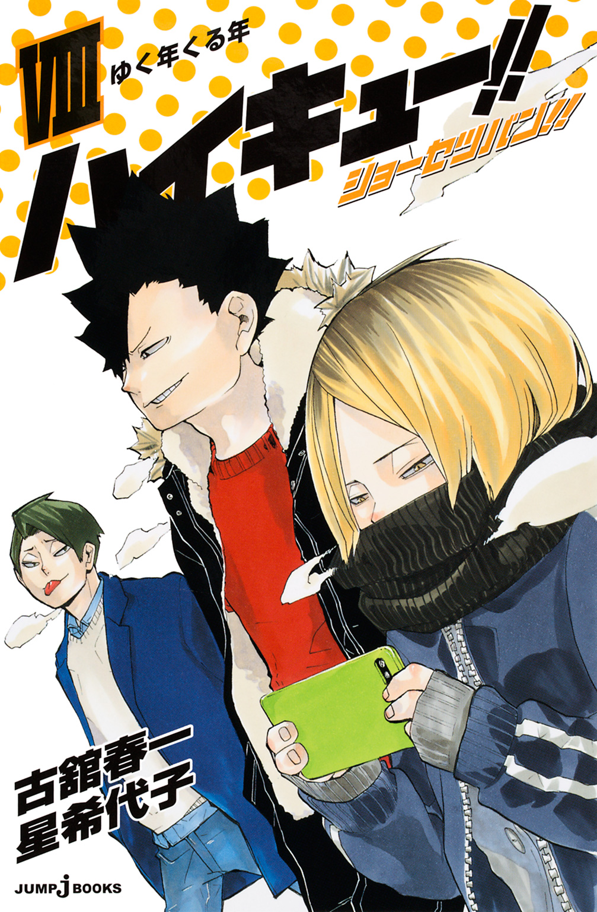
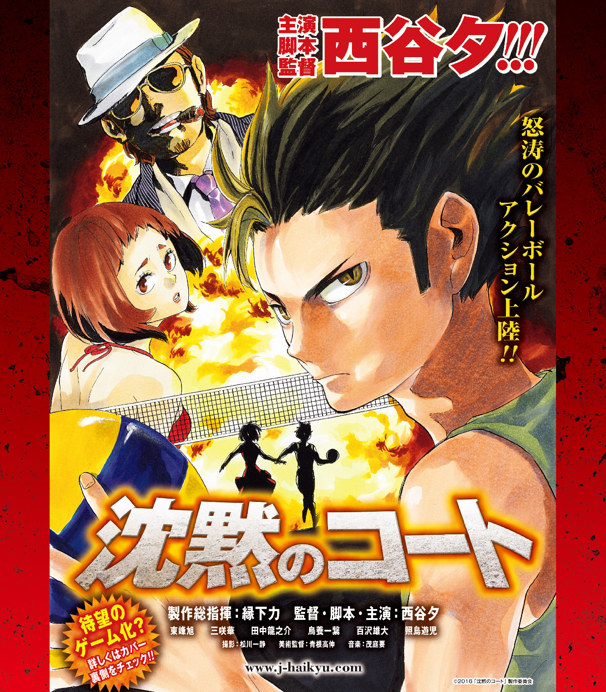
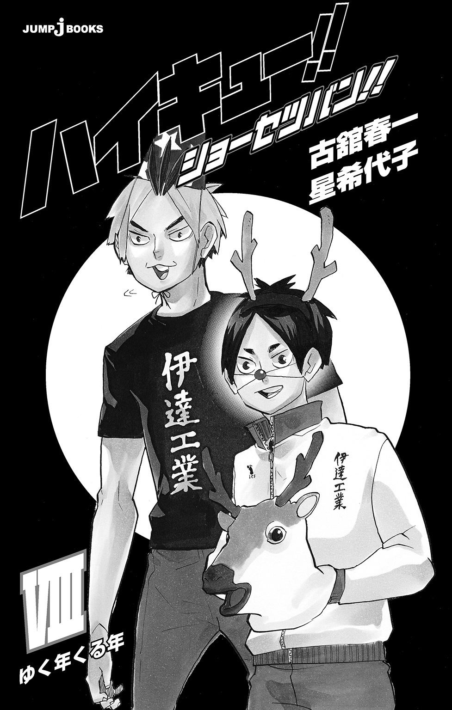
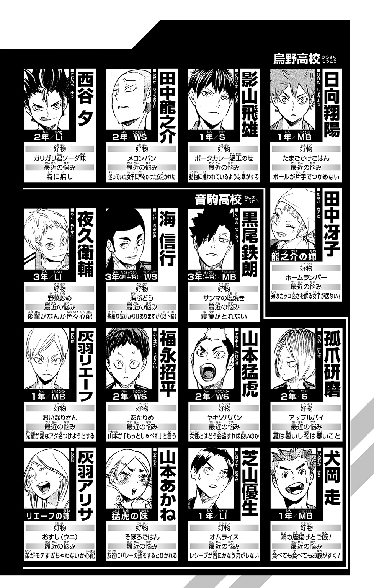
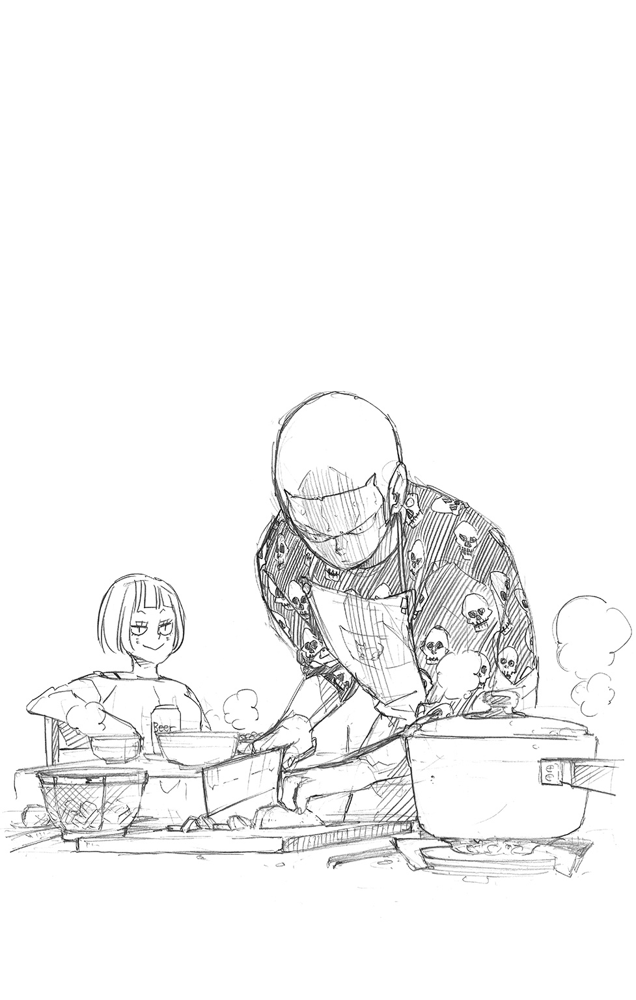
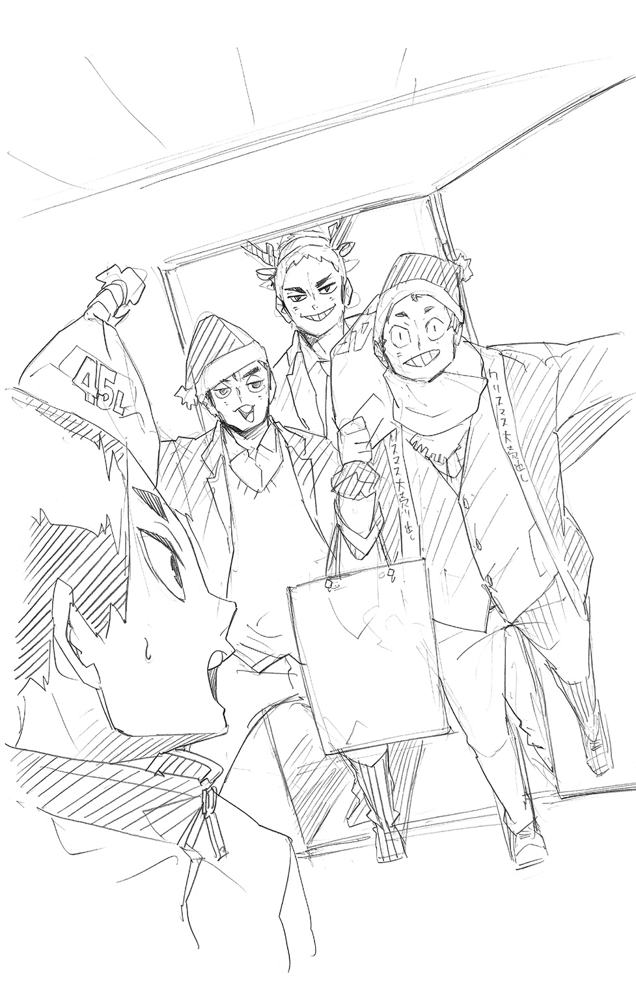

| ハイキュー!! ショーセツバン!! VIII ゆく年くる年 | |
| 古舘春一 & 星希代子 | |

この本は縦書きでレイアウトされています。
また、ご覧になる機種により、表示の差が認められることがあります。

この作品はフィクションです。
実在の人物・団体・事件などにはいっさい関係ありません。


まぶたが小さく震え、やがてゆっくりと目が開く。そのまま布団のなかで数秒ぼんやりと天井を眺め、しかし起きずに再び目を閉じる。しばらくするとまた目を開け、ぼうっとして、閉じる。開ける、閉じる、開ける、閉じる、開ける、閉じる――の単純動作を数回繰り返すあいだにも、ベッドに据え付けられた棚では目覚まし時計がじりじりと鳴り続けている。が、影山飛雄は起きない。
ダンベルやハンドグリップ、バレーボールが無造作に転がった部屋はまだ薄暗かったが、カーテンの隙間から差しこむ朝の光は次第に寝顔にかかっていく。眩しいのか眉間にあらわれた皺がどんどん深くなり、寝苦しそうに何度も寝返りを打つにいたって、影山は布団から長い腕を伸ばした。
「......うるさい」
乱暴に目覚ましのアラームを止め、片腕を伸ばした不自然な姿勢のまましばし固まっていたが、そのあとは意外にも布団の温かみに屈することなく身体を起こす。ポキッと小さくどこかの骨が鳴ったのは、大きく伸びをしたせいだ。影山はのっそりとベッドから出ると、冬の冷えきった部屋のなかで腹を押さえた。
「メシ......」
低くうめき、寝巻き代わりのスエット姿のままカーテンも開けずに部屋を出ていく。その影山の後頭部に、ぴょこんと派手な寝ぐせが見えた。
リビングは暖かくて再び眠気が戻ってきたが、テレビに映っていた天気予報を見るともなく見ているうちに食事が出されたので食べる。今日の朝食は雑煮だ。ホカホカと湯気を立て、添えられたイクラの赤い彩りも鮮やかだったが、影山の表情は変わらない。内心「餅」と思うだけだ。嫌なわけでも嬉しいわけでもなく、ただ「餅だ」と思う。そして出された雑煮を「餅」「伸びる」「熱い」などと思いながらあっという間に食べ終え、次いで出てきたお茶を流れ作業のようにすする。家族と「うん」「いや」などとひとことふたこと言葉を交わしてから、歯磨き、洗顔を終えて、二階の自室へ向かう。
「ふあ......ぁ」
大きくあくびをして階段を上る影山は、まだ半分眠っているような状態ながら、なにか軽い違和感を覚えていた。
さっきから、ちょっと変だ。
「.........？」
身体の不調、ではない。なんだろうかと思いながら部屋に戻り、カーテンを開けて少し考える。
窓の外には雲ひとつない青空が広がっていた、快晴だ。雪が降りそうだとか風が強いだとか、湿度が高い、気圧が低い、というようなことでもない。
影山は首を傾げ、ちょっと頭に手をやって寝ぐせに気づき「これか？」と思う。違うような気もしたが、ほかに思い当たるふしもないのでこの寝ぐせのせいだということにする。そのくせ寝ぐせを直しもせずトレーニングウェアに着替えると、リビングの家族に「走ってくる」とだけ告げて家を出た。部活が休みのため、自主トレのランニングに出るのだ。

早朝の空気はピンと冷たく、肌を刺してくる。寒い。ぼんやりとしていた頭が目覚めるようだ。舗道の脇には数日前に降った雪が小さく固まって残っており、影山はその雪を理由もなく踏む。ザクッとした感触を足に感じると一瞬満足そうな顔をしたが、すぐ念入りにストレッチをするといつもの道を駆けだした。
白い息を吐き、一定のリズムで走る影山の脇を郵便配達のバイクが追い抜いていく。少しムッとした影山だったが、しかしバイクのほうは一軒ずつ停まって配達しているため、影山もすぐに追いつき、抜き返す。こうして何度かバイクと抜きつ抜かれつを繰り返しているうち、影山はあちらこちらの門にしめ飾りや門松が飾られていることに気づいた。
「あ」
影山はようやく違和感の正体を知った。
「正月か」
そう、今日は１月１日、日曜日。まごうことなく正月だった。
影山といえども、今日が１月１日であることに気づいていなかったわけではない。「１月１日は部活が休み」という認識はあった。だからこそこうして走っているのだ。
ただ１月１日をただの日付としてしか見ておらず、『新しい一年が始まるおめでたい日』として捉えていなかっただけだ。
「......ふむ」
気づいてみれば、今日は朝から雑煮だったし、もしかしたら部屋のどこかに鏡餅くらいは置いてあったかもしれない。家族に「煮物や数の子もいる？」と訊かれたような気もするし、テーブルに年賀状があったような、なかったような気もする。思い出そうとしても、影山の頭にはぼやぼやっとした印象派ふうの風景しか浮かんでこなかったが。
しかし、ただただ、空腹と寝起きで頭が働いておらず、うっかり気がつかなかったというだけでもない。影山は足を止めずに走りながら思った。
年が変わったら、昨日までとなにがどう変わるんだろう。
昔は正月にみんな一斉にひとつ歳をとったというけど、今はそんなこともない。１月より、４月のほうが学校やクラスが変わって新しい年って感じがするが、正月みたいに餅をついて祝ったりもしない。その餅だってべつに正月にかぎらず年中食えばいいじゃないか。だめなのか？ 米やうどんやそばとどう違うんだ。同じ炭水化物じゃないのか？
「......わからん」
影山の眉間に皺が寄る。
まあ、餅は１月ということにしておく。わざわざ夏に食いたいものでもない。じゃあ２月の食べ物はなんだ。２月......豆まきか、豆でいいのか。豆で腹がふくれるのか。いや、節分は恵方巻きか。恵方巻き？ 待て、恵方巻きっていったいなんなんだ？
頭のなかで恵方巻きがぐるぐると回りだして、そもそもなんでそんなことを考えていたのかもわからなくなり、影山は考えるのをやめた。恵方巻きも餅も、そんなことは今どうでもいい。
影山は頭を空にすると、ただ無心に走った。アスファルトを蹴り、着地し、また蹴る。それだけになる。もう寒さも感じない。いつの間にか寝ぐせも直っているが、本人は気づかないどころかもう忘れている。
いい調子だ、と思ったときだった。
ポケットに入れていた携帯が振動した。走りながら着信を見てみれば、日向翔陽からのメールだ。
『山口と初詣兼必勝祈願行くけど来るかよ？？』
影山は一瞬足を止め、返信する。
『行かない』
それだけ打って顔を上げると、再び前を向いて走りだす。しかし集中がとぎれたのか、もうさっきまでの調子は戻ってこない。
「............」
影山は努めて淡々と、黙々と走ってはいたが、腹の奥にもやもやとした感情が溜まっていくのが自分でもわかった。その不快なもやもやは次第に輪郭をはっきりさせて、いつしか言葉になり、口をついて出る。
「......あのボゲ、なに浮かれてやがる！」
一定のリズムで刻まれていた足音が乱れた。運悪く周囲にいた人々がぎょっとして振り返るが、もはやすっかり腹を立てている影山の目には入らなかった。
ったく、あいつは下手なんだから、初詣とかいってチャラチャラ遊んでないで練習すればいいだろうが。春高まであと四日だっていうのに......四日あったらどれだけのことができると思ってんだ！ それをなにが初詣だ、なにが必勝祈願だ。神様が試合に勝たせてくれるとでもいうのか、ボゲ！
頭のなかが日向への不満でいっぱいになり、眉間にギュギュッと深い皺が刻まれる。その、隠す気などさらさらなく漏れ出し放題の殺気を感じたのか、すれ違った小型犬がキャンキャンとけたたましく吠えたててくる。
「あァン!?」
驚いて振り返っただけの影山だったが、しかしその表情は犬と飼い主に因縁をつけようとしている顔にしか見えない。可哀想に、怯えた犬はさらに吠える。
「え？ わっ、す、すみません！」
あわてた飼い主が「コラ」などと言って犬を黙らせようとするも、すぐそばに原因――悪人顔で見下ろす影山がいては静まるわけもない。たぶん犬の持つなんらかの本能にしたがっての行動なのだろう。
「ほら、行くよ！」
吠え続ける飼い犬を引っ張って逃げだした飼い主の手に、一本の破魔矢が握られているのを影山は見つけた。彼女も初詣の帰りなのだ。見れば道行くほかの人たちも、和装だったりお守りやおみくじを見せ合っていたりと初詣帰りらしい。
「............」
飼い主に逆らってまで振り返り、いつまでもキャンキャン吠えながら小さくなっていく犬を仁王立ちで見送りながら影山は思う。
これだけたくさんの人間が、犬を連れてまで初詣に出かけるっていうことは、やっぱり神社にはなにか力があるんだろうか。まさか白鳥沢に勝ったのも、試合前に主将が女バレの人からもらったお守りの力だったりするのか!?
愕然とするが、すぐに正気に戻る。
いや、そんなわけはない。
コートに神様がいてたまるか。
雑念を振り落として再び走りだしたとき、頭のなかで声がした――気がした。
――王様
その少しからかうような声が、中学時代のチームメイトのものか、それとも今の仲間のものかはわからない。
コート上の王様。
中学時代に与えられたその呼び名は、影山にとって決して誇らしいものではなかった。
チームメイト全員に見放され、試合中のコートで孤立した忌まわしい過去の汚名なのだから。
中学総合体育大会県予選、決勝戦。
全国大会への切符がかかった、決して落とせない大切な一戦だった。影山だけでなく、チームの誰もがそう思っていただろう。しかし影山の持つ、勝利への強い執着と自己の能力への過信とが、仲間に対する要求を逸脱させる。
ブロックを振りきりたいがための無謀なトスは、相手チームのみならず味方のスパイカーたちをも置き去りにした。
チームメイトからの非難は当然のものだった。
「ムチャすぎんだよ、お前のトス！ 打てなきゃ意味ねえだろうが！」
しかしすでに周りの見えなくなった影山には、その言葉の意味するところが理解できなかった。
もっと速く、もっと高く。それ以外になにがある......！
ネットの向こうに立つ強敵への、そしてネットのこちら側にいる仲間への苛立ちが爆発する。
「俺のトスに合わせろ！ 勝ちたいなら！」
その迂闊な一言が、溝を決定的なものにした。
仲間は、セッター影山を見限った。
その後、ふたたび影山が上げたムチャ振りトスをチームの誰も打とうとはしなかった。
試合中、ボールが誰の手にも触れることなく、ただコートに落ちていく光景は忘れられるものではない。それが誰にも取れなかったのではなく、誰もが取らなかったのだとしたら、なおのこと。
「.........！」
ボールを繫ぐスポーツであるバレーボールで仲間から受けた『繫がない』という確固たる拒絶の意思。チームの司令塔たるセッターへの『もうお前にはついていかない』というメッセージ。
かくて影山はベンチに下げられ、孤立した。コート上の王様との謗りを受けて――。
しかし影山は、もうその過去に足をすくわれはしなかった。未熟さゆえの失敗といくつもの後悔を経て、今、影山は走る。
決して第一志望ではなかった烏野高校で出会った新たな仲間たち。彼らと何度となくぶつかり合いながらそれでも進んできた九か月の日々が、影山を自己チューの王様、横暴な独裁者の過去から脱皮させたのだ。小さくなった脱け殻を後ろに捨て、置き去りにするかのように、影山はただ前だけを見て走り続ける。過去の過ちから解き放たれ、ついに目覚めた身体は、軽く、自由で、強い。
――新コート上の王様、誕生だ。
走る頭に響くのは、これははっきりと日向の声だとわかる。
コート上に神様はいない、でもコートを支配するものは確かにいる。
「セッターだ」
白い息を吐いてひた走る影山の背中は、自信に満ちていた。四日後に始まる春高への調整も万全だとわかる。そして、前を見据える顔に浮かぶどこか邪悪な表情も、チームメイトが見れば上機嫌なのだとわかるのかもしれない。影山はもうひとりではない。今は迷ったときにその手を引く者、足がすくんだときに背中を押す者、同じ目標を持ってともに走る仲間がいるのだ。
「あ、影山ーっ！ おーいっ！」
とつぜん名前を呼ばれて足を止めると、交差点の向こう側で叫んでいる人影に気づく。子供のように両手を振ってピョンピョンと跳んでいるのは日向だ。
信号が変わるまでのほんのちょっとの時間すら待ちきれないようにソワソワキョロキョロしていた日向が、青信号とともにダッシュで横断歩道を渡ってくる。そして白い息を吐き、鼻の頭を真っ赤にしたまま影山を見上げて悔しそうに言った。
「なんか用事でもあるのかと思ったら、走ってるだけかよ!!」
「だけとはなんだ」
ぶっきらぼうに応えた影山の前をチョロチョロと横ぎり、ガードレールの周りに残る雪の塊をザクザクと踏み壊しながら、日向が言う。
「おれ、初詣終わって、さっき山口と別れたとこなんだ。だから、今からお前と神社に行っても、もう初詣じゃないんで。二度目詣なんで。残念だったな」
「ぜんぜん残念じゃねえし、神社にも行かねえ」
あくまで仏頂面で返す影山に、日向は雪を踏むのもやめて口をとがらせる。
「お前さー、正月なんだから、もっとなんか言い方あるだろー。今年もよろしくお願いしますとかー。正月だぞ、正月！」
「お前も言ってないだろうが」
「あ、そうか」
日向は素直に認めると、ペコリと頭を下げた。
「明けましておめでとうございます」
「え？ あ......ああ......」
日向のお辞儀につられつつ、気恥ずかしさから影山はそっぽを向いて会釈を返す。そのぎこちない態度に気づいた日向が、さも心配そうに言った。
「お前、大丈夫か？ そんな態度だとお年玉もらえないぞ？」
「子供か」
「ああ、子供でけっこう！ おれは、高校卒業まではお年玉をつかむ！ この手で！」
拳を高く掲げて謎の闘志を燃やす日向をじっと見下ろしていた影山だったが、ふと納得したようにひとり頷く。
「......確かに、お前なら子供に紛れてもわからないかもな」
「なんですと!!」
真っ赤になって憤慨する日向をかまわず置き去りにして、影山は再び舗道を走りだした。
「え。おいコラ待てよ！ 黙って行くなって、影山ーっ!!」
叫びながら追ってくる日向に「ついてくるな！」と怒鳴るも、もちろん、ハイわかりましたと言うことを聞くような相手ではない。
「なんで逃げるんだよ!!」
「誰が逃げるか！ 俺はランニング中なだけだ、邪魔するな！」
新年早々騒がしく怒鳴りあい、競いあうように駆け抜けるふたりを、初詣帰りの人たちが怪訝そうに眺めていた。彼らふたりが、春の高校バレー全国大会に出場する地元烏野高校の主力選手だとは誰も知らない。予選にひしめく幾多の強豪たちを翻弄した、変人速攻のふたりだとは。
結局は牽制しあいつつも並んでランニングすることになり、さすがのふたりもいくらか静かになる。速いペースで走り抜けるふたりの足元から、まるまるとふくらんだ冬毛の雀が数羽、驚いたように飛び立つ。正月の空はただただ青く、空気は澄み渡っていた。
「なー影山、せっかくだし学校行こうぜー」
「勝手に行け、俺はお前と遊んでるわけじゃねえ」
振り向きもせずに応えた影山の横顔を睨みつけ「ハンッ！」と鼻息荒く顔を背ける。日向はしばらくムッとしたまま無言で走っていたが、ふと前を歩く男に気づいて隣の影山に話しかける。
「なあ影山、あの帽子さ......」
ふたりの前方をよろよろと歩く男の坊主頭には、見慣れたニット帽が載っていた。その後ろ姿はどう見ても２年の田中龍之介だったが、肩を落として歩くその様子はどうにも田中らしくない。いつもなら肩をいからせ周囲を無駄に威嚇して歩くか、でたらめな鼻歌など歌って楽しげにスキップしているような先輩なのだ。なにかあったのだろうかと日向が駆け寄り、影山もあとをついていく。
「田中センパイ？」
「ん？ ......おう、なんだ、お前らか」
振り向いた田中の顔はげっそりとやつれ、正月には似つかわしくない悲壮感を漂わせている。
「ど......どうしたんですか？」
おずおず尋ねると、田中はこれまで溜めに溜めていた我慢のタガが外れでもしたように、涙目で愚痴りだした。
「聞いてくれよ！ どうもこうもねえんだわ！ 昨日の夜から酔っ払った姉ちゃんが絡んできてマジ最悪でよー、おせちとか雑煮とか人に作らせて、テメーはずっと飲み続けてんだよ。もう身体中からプンプン酒の匂いがしてんだぜ!? 近づいてきても日本酒の匂いしかしねーの。もはやアイツ赤い血が流れてねえよ！ 血管に流れてるの、ぜったい日本酒だよ！」
「血管、ですか」
「日本酒......」
日向と影山は、最初の東京合宿の際に世話になった田中の姉、冴子のことを思い出す。ちょっと怖いところもあったが、面倒見のよい、姉御肌のいい人だった。なんといっても、赤点の追試で合宿参加が危ぶまれたふたりを車で東京まで送ってくれた恩人だ。悪い人のわけがない。その夜、先生やコーチたちを酒で潰したという噂を聞いたような気もしたが――。
「で......でも、お姉さん、優しいし、おもしろいし。本当はいい人......ですよね......！ な、影山！」
「え？ そうか？」
「おい！ ここはそうだって言うとこだろ！」
なんとかフォローしようとする日向を、悲劇の弟が遮る。
「甘いッ！ もはや本当はいい人とかいう話ではない！ いいか、人間ってものはな......酒を飲むと性格が変わるんじゃない。隠されていたもともとの性格が表出し、増幅されるものだと思え」
「え？ ひょ、ひょう......？」
きょとんとする日向に、田中が説明する。
「そう、ふだんネコをかぶっている人間ほど、化けの皮が剝がれて騒がしく......。ふだん虚勢を張っている人間なら、本来の弱さが出てきて意外にも泣き上戸に......」
「は、はぁ......」
「しかし！ ふだんから表も裏もないウチの姉ちゃんの場合は、飲めば飲むほどただただ姉ちゃん度が増すのみ!! 今日は、正月でちょっといい酒があったことにより、姉ちゃん十人分くらいの姉ちゃん度だった......。ひとりでもかなりめんどくさいのに十人だぞ、十人!!」
「じゅ、十人......!!」
日向はゴクリと唾を飲みこんだ。単に田中の勢いに負けただけではない。田中に姉がいるように、日向には妹がいる。
「兄ちゃーん、どこー」「くつした一個ないー！」「クイズ出して！ クイズ！ むずかしいやつ！」「兄ちゃん今オナラしたでしょ、クッサーイ」「なわとびするから見ててー」「迷路描いて！ 迷路！ むずかしいやつじゃないと描きなおしだから！」「さつじんアターック！」「かくれんぼしよー、兄ちゃんオニねー」「貸してー、夏もそれやるー、貸してー！ 十分で返すからー！」「ひっさつサーブだーっ！」
十人に増殖した妹が家の四方八方から飛びかかってくるさまを想像し、逃げだした田中の気持ちがどっと身に沁みたのだ。
「......妹が十人になったら、ちょっと身体がもたない......です。どこからボール飛んでくるかわかんないですし......」
「そういうことだ」
田中は重々しく頷き、ゆっくりと歩きだした。そして正月の青い空を見上げてしみじみと呟く。
「外は......いいな」
日向と影山はただ「はい」と頷き、その哀愁ただよう背中について歩くことしかできなかった。
そして寄る辺のない三人がたどり着いたのは、通い慣れた烏野高校だった。
「なんか結局、ここに来るなー。男三人で学校しか来るとこないってのも寂しいものがあるけどよ」
田中は寂しいと言いつつ、解放感からかさっきまでよりは朗らかだ。
「さすがに誰もいませんね」
影山がそう言ってあたりを見回す。なんと言っても元日だ、どこの部活も休みだろう。いつも人で溢れている学校だけに、誰もいないと静かすぎて妙だった。これといってすることもなくぼんやりとしているうち、三人のあいだに「体育館にも入れないし、なにしに来ちゃったのかなー」という空気が流れだす。そのとき、日向が声をあげた。
「あ、体育館のほうに誰かいます！」
「えっ？」
顔を上げると、確かに第二体育館の裏にちらりと人影が見えた。暇つぶしのネタを見つけて、俄然田中の目が輝く。
「誰だよこんな日に、怪しいやつだな......って、俺らも人のこと言えねーけど。......おい、影山、見てこいよ」
「え、俺っスか」
めんどくさそうに応えた影山に向かって、日向が大きく頷く。
「そう、キミだよ、影山クン」
「うるせえ、テメーが行け、ボゲ」
「イテ、蹴るなよ！」
足を止めた三人が様子をうかがっていると、体育館の脇から黒い人影がひとつあらわれた。三人に気づいたのか、手に持った板きれを威嚇するように掲げてゆっくりと近づいてくる。
「あ、あれは......」
三人が息を吞み、影が言葉を放った。
「よくここまで来たな！ チャレンジャーたちよ!!」
その声を合図に、日向と田中が駆けだす。
「西谷センパイ！」
「ノヤっさんじゃねーか！ なにやってんだよー」
田中と西谷夕がバシバシと背中を叩きあうその脇にスッと近づいて、影山がギクシャクと頭を下げる。
「ア、アケマシテ......オメデトウ......ゴザイマス」
「影山クンはロボですか」
すかさず日向が茶化し「黙れ！」「うるせー、ロボ！」「そもそもテメーが!!」「あァン!?」と不毛な言い争いが始まる。今年も変わらず騒がしい１年生を悠々と無視して、田中が訊いた。
「で、ノヤっさん、こんなとこでなにやってんだよ」
「なにって、正月だぞ？ 言わずと知れた、羽根つき勝負だ！」
羽子板を高く掲げた西谷の言葉に、日向が素早く振り返る。
「えっ、おれも！ おれもやりまーす！」
ハーイ！ ハイ！ ハイ！ と手を上げた日向は、西谷から羽子板を受け取り、嬉しそうにピョコピョコ跳びはねる。そして腰を落とすと羽子板を構え、影山に狙いをつけた。
「こい、影山！ 勝負だ！」
しかし日向のテンションとは裏腹に、影山はランニングシューズの紐を結び直すと静かに言った。
「俺は、走りに戻るので」
影山は先輩たちにペコリと頭を下げると、おもむろに走りだした。田中も西谷も、きっと日向が文句を言って追いかけるだろうと思った。が、日向は意外にもその場でほくそ笑むだけだった。
「ほほう、影山クン。......つまり、羽根つきではおれにかなわないと？」
「なん......だと......？」
ピタリと足を止めて、影山が振り返る。目が、本気だ。さっきの犬も、その眼力だけで負けを悟り、吠えもせずに逃げだすだろう。
「おい、今、なんて言った......。羽根つきだろうとなんだろうと......この俺が、お前に負けるわけないだろうが!!」
人のいない構内に、影山の声がビリビリと響く。しかし日向も引かない。
「へー、そうですか。まあ、口だけならなんとでも言えますけどねー。ま、影山くんは不戦敗ってことで。どうぞどうぞ、レッツランニング！」
ニヤニヤと笑う日向をどこまでも本気で睨みつけた影山は「このボゲ......、ぜったいに倒す！」と戻ってきた。かと思うと日向の手から羽子板を取り上げ、真剣な顔で素振りを始める。
「命のやり取りでもする気か」
ビュンビュンと風をきる影山の素振りにあきれつつ、田中が日向に羽子板を渡す。
「......ま、じゃあ、勝負だ。ほい、日向」
「アザス！」
元気に礼を言って受け取ったかと思うと、日向は待ちきれないようにさっそく羽根を打った。
「喰らえ！ ニューイヤーショーット!!」
妙にめでたい技名のわりにカコンと間の抜けた音を立てて羽根は飛ぶ。そしてヨロヨロと頼りない放物線を描いて、素振りに熱中する影山の足元にポトリと落ちた。
「えっ......なっ......！」
地面に転がる羽根を見下ろし絶句する影山を見て、日向が跳びはねる。
「イエーイ、おれ、まず１点先取！ 日向選手、嬉しい先制点です！」
「お前......打つなら打つって言え！ ボゲ！」
開始数秒でたちまち揉める１年生に、ギャラリーの先輩たちも、やいのやいのと声をかける。
「翔陽、卑怯だぞー！ 一礼してからだー！」
「いいぞー、日向！ 勝ったらノヤっさんがガリガリ君おごってくれるってよ！」
その声に、つい「えっ！ おれ、肉まんがいいです！」と田中のほうを見たときだった、影山が羽根を高く放り上げ、跳んだ。
「......シャッ！」
ガッ！ という鋭い音に振り返ったときにはもう遅かった。羽根つき離れしたスピードで飛んできた羽根が、動けず固まる日向の頰をかすって落ちた。
「く、くそッ......！」
影山のサーブに反応しきれず、日向は地団駄踏んで悔しがる。ギャラリーはといえば、まさかのジャンピングサーブに「影山、テニスか！」「ナイス殺人サーブ！」と大喜びだ。
影山はニヤリと余裕の笑みを浮かべて、日向を見た。
「ほら、お前の番だぞ、早く打て」
「いっ......言われなくてもわかってるっつーの！ いくぞ！ くらえ、影山ーッ！」
カコン。
「甘い！」
カコン。
「なんのっ！」
カコン。
「クソッ！」
カコン。
「まだまだァ!!」
カコン。
ふたりの必死のラリーを、２年生ふたりが「墨と筆があればいいんだけどなー」「坂ノ下にあるだろ」「今日はさすがに閉まってるって」「あ、そっか」と吞気にダベりながら見ている。
影山は、ただただ全力で羽根を追いかけていた。
中学でも、高校でも、自分がこれまで部活の仲間とバレーボール以外のことをして遊んだことなどなかった――という事実に気づくこともなく、真剣に。
バレー部員たちのかけ声に叫び声、ヤジだか声援だかわからない笑い声。そしてカコン、カコンと乾いた羽子板の音が、白い息とともに正月の青い空に吸いこまれていく。空には雀が飛び、そのはるか上空に小さくうっすらと飛行機の影が見えた。
春高まであと四日、新年一日目の平和な朝のことだ。
沈黙のコート
♯１「先攻と後攻」
窓の外は一面のどかな田園風景だった。遠くに山が霞み、手前に広がる小麦畑の中にはぽつりぽつりと民家の屋根が見える。たったいま通り過ぎた小さな踏切では、孫の手を引いて列車を見にきた老夫婦が手を振っている。
窓に額をつけて外を見ているのは、学生服の少年だ。
小柄だが、派手に立たせた前髪がやんちゃな印象で、二人がけの座席が向きあったボックス席にひとりで座っている。朝には弱いのか、列車の規則正しい揺れがそうさせるのか、ぼんやりと眠そうだ。外を見ているというより、冷たい窓ガラスに顔を押しつけて眠気を覚ましているだけなのかもしれない。
「ふぁ......あ......」
少年は大きくあくびをすると、ぐるりと車内を見まわした。ほかにも数人乗客がいるが、ほとんどは同じ制服やジャージ姿の学生だ。静かに単語帳を繰ったり、友達とふざけあったり、菓子パンを食べたり、そこには面白くも珍しくもない列車通学の日常があった。
「今日も、平和だな」
列車は揺れ、景色は後ろへ流れていく。窓からの日差しはやわらかく、あたたかい。少年はふたたびあくびをすると、ゆっくり目を閉じかけた。
と、ドアが開き、前の車両からひとりの女性が駆けこんでくる。
「た、助けてください！」
翻ったサマードレスの鮮やかな赤に、寝ぼけていた少年の目が覚めた。すかさず立ちあがり、歩み寄る。
「どうしました、お嬢さん」
「変な男たちに、追われて......」
ドレスの女は不安そうに、入ってきたドアのほうを見た。ほかの乗客たちも、なにごとかとふたりの様子を窺っている。少年は自分の席に女性を座らせると、学生服を脱ぎ「ここで静かに」と、女性の肩へ被せた。そしてランニングシャツ姿で、敵を出迎えるようにドアの前に立つ。
ほどなくしてドアが開いた。
入ってきたのは坊主頭の男だった。坊主頭は少年に気づきはしたが鼻で笑って無視し、車内を見まわして声を張りあげる。
「この列車に、爆弾を仕掛けた！」
そして坊主頭は、手にしていたボール――青と黄色を組みあわせた派手なボールだ――を少年に見せて笑った。
「聞きな。いいか、このボールはただのボールじゃない、爆弾だ。落としたり衝撃を与えたりすると、列車ごと木っ端微塵だぜ」
少年はチラリとボールを見ただけで無反応だ。しかし、坊主頭はニヤニヤと嬉しそうに笑う。
「怖くてなにも言えないか、そうだよなー怖いよなー、かわいそうになー。でも諦めろ、ここで虫けらのように死ぬのがお前の運命だ。わかったら席に戻んな、小さいの。さもないと、まずお前から吹っ飛ぶことになるぜ？」
少年は坊主頭をじっと睨みつけながらも、大人しく従い、席へ戻る。
座席ではドレスの女が泣いていた。
「祖父の病院へお見舞いにいくだけなのに、こんなことに巻きこまれるなんて......」
震える肩に手を置いて、少年はぶっきらぼうに呟く。
「大丈夫だ、この列車もあなたも、絶対に守る」
言葉ばかりは頼もしかったが、まだ幼さの残る、自分よりも小さな少年の言うことだ。ドレスの女はもうこれまでと諦めたのか、両手で顔を覆い、さめざめと泣くのだった。
しかし少年は、表情を変えずに言った。
「下じゃない、前を向くんだ。下を向いていて勝てたチームはない」
そう言われても、ドレスの女は顔を上げなかった。しかし少年は続ける。
「今、ボールを持ってるのは、あいつらだ。きっと、先攻を選んだ自分たちが有利だと思ってるだろう。でも、それが奴らの敗因だ」
「......え？」
女がやっと顔を上げる。少年は女を褒めるように頷くと、チラリと坊主頭を盗み見て言った。
「なぜなら、最初にスパイクを決めるのは後攻側だからだ。それに......こっちのコートには俺がいる」
「それって、どういう......」
女はもう泣いてはいない。ただ混乱していたのだ。少年は、女の肩にかけた学生服を見ると、少し寂しげに呟いた。
「やっと、普通の高校生として生きていけると思ったんだがな」
「あなたは、いったい......」
女の問いに、少年が応える。
「西谷夕」
「え？ あ、私は......三咲華、です」
「いい名だ」
西谷は、静かに頷いた。
スーパーのビニール袋をガサガサ鳴らして、田中龍之介は玄関に駆けこんだ。
「あー、マジさみーわ」
引き戸を閉めて鍵をかけ、冷える上がり框でスニーカーを脱ぎつつ考えるのは、なんということはない、今夜のテレビ番組のことだった。もうすぐ紅白と格闘技とバラエティとが始まるが、さてどれをメインで見ようか......。
そう、今日は大晦日なのだ。
正月といえばお年玉に初詣、凧揚げ、羽根つき、あけおめメールと、さまざまなイベントが思い浮かぶが、大晦日の楽しみといえばなんといっても夜のテレビだ。今、この寒いなか、わざわざ買ってきた物も、テレビを見ながら食べるためのスナックとコーラなのだから、気合の入りようが違う。
靴紐をほどきながら鼻歌が出てくるのも、今日はしかたのないことだった。部活がない正月は少々もの足りないが、行事は多い。こんなふうに夜をダラダラと過ごせるのは貴重なのだ。お屠蘇気分ならぬ大晦日気分で浮かれていると、背後から突然名前を呼ばれた。
「龍」
姉の冴子だ。龍之介は振り向きざまに一応牽制しておく。
「なんか買ってくるもんないか、さっき訊いただろ？ 今からあれ買ってこい、これ買ってこいって言われても、行かねーからな」
「そんなんじゃないよ、信用ないね......」
ぼやく姉だったが、それもこれも日頃の行いがものを言うというやつだ。この機会に、どれだけ俺をこき使ってきたか、これまでの人生を思い返せよな、と思ったが、まさか本人に言えるわけもない。
「悪かったよ」と謝り、「すっげー寒かったから、外行きたくねーなって思ってさ」とつけ加える。触らぬ神に祟りなしとばかりにさっさと茶の間へ行こうとする弟に、冴子は言った。
「あたしさ、さっきわかったんだよね」
「え？ なにがだよ」
足を止めるも、冴子は雑誌を片手に壁へもたれかかり、射抜くような鋭い目で弟を見ているだけだ。龍之介は少し躊躇したが、もう一度訊く。
「なにがわかったんだよ」
「だからさ、あんたが女子に人気がない理由」
スッと足元に冷気を感じたのは、玄関の隙間から風が吹きこんできたのか、それとも血の気が引いたのか――。龍之介は屈辱のあまり「なッ......！」と一瞬顔を伏せたが、すぐに歯を食いしばって立ち直り、姉に向き直った。
「......って鬼かよ！ なにが楽しくてそんなピンポイントで心を抉りにくるんだよ！」
「楽しいわけないだろ！」
間髪入れずに言い返され、龍之介は怯む。そして悔しそうにくちびるを嚙んだ姉を見て、これは只事ではないと気づいた。
「な、なんだよ......」
「あたしだってね......あたしなりにあんたのこと心配して言ってやってんだよ！ こんな漢気溢れたいい男なのに、なんで女子に避けられてんだろって！ どうしたらお前の良さがみんなに伝わんのかなって！ お前が不甲斐ないから、こっちはいつもいつもヤキモキして見てんだよ!!」
「だから避けられてるとか言うなって！ 泣けてくるだろ！ とにかく大きなお世話だっつーの!!」
半泣きで歯向かってきた弟を見て、冴子は癇にさわったように眉を上げた。しかしさらに心を折りにいくことはなく「......ふうん、そうかい。じゃあいいや」と、なにやら思わせぶりなことを言って、廊下へ戻っていこうとする。
「お、おい、なにがいいんだよ。気になるじゃねーか」
訝しむ弟の声に、冴子は背を向けたまま訊いた。
「女子ウケ必勝法なんて、どうせ大きなお世話なんだろ？」
「......え」
龍之介が息を吞む。
なんだよそれ。女子ウケ......必勝法......だと!? そんな夢みたいなものが本当に存在するのかよ？ いや、女子はパチンコやなんかとはワケが違うんだぞ、必勝法なんてあってたまるかよ。きっと姉ちゃんの悪ふざけに決まって......いや、こいつは冗談を言うような女じゃない。少なくともシラフのときは常にガチだ。そこが良いところでもあり、めんどくさいところでもあるのだが、今はそんなことを言っている場合ではない！ そんな、女子ウケ必勝法だなんて都合のいい、怪しい広告みたいなものが本当にあるんだろうか......いや、あるわけ......でも待てよ、いや、そんな、まさかな、でも......あるといいニャー。
揺れる男心に気づいてか気づかずか、冴子は「そんじゃ」と片手を上げた。
「邪魔して悪かったね、姉ちゃんはひとり寂しく飲むとするよ。さぁて、ビール、ビールっと......」
語尾に鼻歌が混ざる。大人の余裕を見せて軽やかに去っていく冴子とは対照的に、龍之介は這うように手を伸ばし「ま......待てよ」と姉を引き止めた。去る者は追わずだなんていう余裕は皆無だ。
冴子は足を止めはしたが振り向きはせず、丸めた雑誌でポン、と手のひらを叩いて聞き返す。
「『待てよ』？」
「くッ......待って......ください......」
言い直された台詞に「よし」と振り返り、冴子は訊いた。
「で、なんだい？」
文字どおりの「上から目線」で見下ろしてくる姉をしばらく睨んでいた龍之介だったが、それも長くは続かなかった。
「......クソッ」
悲しいかな、龍之介はやはり女子にモテたかったのだ。モテたい、めちゃくちゃモテたい。とにかくモテたい！ 可愛い女子にチヤホヤされて、たまには冷たくあしらわれたりもされたい！
もはや背に腹は代えられない。ならば、やるべきことはひとつだった。
龍之介は冷たい廊下で膝を正すと、床に頭をこすりつけた。
「......おっ、教えてください！ その、女子ウケ必勝法ってやつを、どうか俺に伝授してください！ 頼む、このとおりだ！」
聞くは一時の恥、聞かぬは一生の恥。龍之介はこの瞬間の屈辱より、明るく健やかな未来を選択した。
這いつくばる弟を見て、冴子は深く頷く。
「頭を上げな。あんたの決意、しかと見届けた。あたしも全力で応援させてもらうよ」
女子ウケ必勝法、ゲット......！
龍之介は廊下に手をついたまま、心のなかでガッツポーズを決めた。
台所のダイニングテーブルで向かい合う姉弟の間には、一冊の女性向け雑誌が開かれていた。さっきまで冴子が手にしていたものだ。
「これだよ、このページを見てみな」
「え」
そのピンクを基調とした華やかで装飾過多なデザインに、龍之介は間違えて太陽を直接見てしまったかのような顔をしたが、大丈夫、紙とインクだ、目を焼かれることはない......と理性の力で畏れをねじ伏せ、眩しい誌面に目を戻す。
「......えーと、なんだ......つきあいたい......、えっ、『つきあいたい男性ランキング』......!? こ、こんなハレンチな記事を女子が読むのか......!?」
弟の動揺など無視して、冴子は「まずは三位からだよ」と指差した。
「......三位、......手料理をふるまってくれる、人......？ は、手料理？ これ、つきあいたい男ランキングだろ？ なんで男が料理なんか......」
冴子はあきれたようにため息をつくと、弟に世間というものの説明を始めた。
「だからあんたはダメだっていうんだよ。いいかい？ 大事なのは『癒やし』ってやつさ。女は一歩でも家から外に出りゃ、常に敵と戦い続けてなくちゃいけない辛い生き物だよ。家の中でくらい、疲れた心を癒やしてくれる男を求めてるのさ」
「え......？ 常に戦ってんのは姉ちゃんくらいだろ？」
弟の不用意な発言に、冴子は人差し指でトンとテーブルを叩いた。
「あたしは、ここで話をやめてもいいんだよ」
「ス、スイマセン!! 黙って聞きます!!」
かしこまった弟を見て頷くと、冴子は本題にきりこんだ。
「これでわかったね。龍、あんたが身につけるべきは、ズバリ手料理力さ」
「て、手料理力......!?」
「ああ、あんたは十分いい男だけどさ、やっぱりそこだけは決定的に足りてない。確かに料理なんて、一朝一夕に身につくスキルじゃないよ。でもね......」
冴子はもったいつけるように雑誌を閉じると、椅子から立ち上がって言った。
「......一年に一度、今ならなんと、短期間で特訓できる大チャンスなんだよ！」
「な、なんだって！ それはお得！ じゃなくて......一年で今だけなんてさすがに都合が良すぎるんじゃ......」
そんな疑問など想定内だとでもいうように冴子は薄く笑う。
「疑ってるようだね。どうする？ 手料理力を身につけてモテるか、それとも諦めてひとり寂しく生きていくか」
一生彼女ができないなんて生き地獄だ。
「......や、やるに決まってんだろ！」
ガタンと椅子を鳴らし、龍之介も負けじと立ち上がる。姉と弟は、台所のテーブルを挟んで睨みあう形となった。そして、長い時間が経った――。
弟の熱く燃えた目をじっと見て、冴子は言った。
「それじゃあ......栗きんとん用のさつまいもを茹でて裏ごし。あと、お雑煮用の引き菜を作るから、そこの大根と人参とごぼうを千切り。人参全部使うんじゃないよ。田作り用のごまめは......あ、その前に、これつけな」
傍らのエプロンを投げつけられ「......えっ？ なに？ ちょっと待って？」とあわてる弟を見て、冴子が笑う。
「なんだい、その顔。まだわかんないのかい？ これから正月用の料理を作るんじゃないか。おせちとお雑煮、あとナメタガレイの煮つけだね。ほら、さっさと手伝いな。ふだんの一か月分の調理が今晩だけでできる、超短期特訓だよ！ こんなチャンス、あと一年やってこないからねー。はい、エプロンつけて手ェ洗いな！」
「え......おせち......？」
一年に一度、今しかできないという超短期集中料理特訓の正体は、ただの正月料理の手伝いだった。
龍之介はどこか釈然としないながらも、言われるがままエプロンをつけて手を洗い、まな板に向かっていた。その横、鍋のなかではさつまいもがふつふつと煮えている。
「大根、まだあと半分あんのかよ......」

ため息をつきながらも、トン......ストン......ゴトン、イテッ、と、ぎこちなく包丁を操る手は止めない。シンクに置かれたザルの中では、ふぞろいながらもなんとか形を変えた野菜が山となっていた。
慣れない作業に、腕と背中がギシギシ痛んでくる。姉はといえば、さっきからああだこうだと口を出してくるばかりで基本的にはなにもしていない。手を動かし、めんどくさい作業をしているのは自分だけだった。
もしかして、これは姉にいいように使われてるだけなのでは......。龍之介は勇気を出して抗議した。
「なんか、手伝えとか言っといて、やってるの俺だけじゃないか？」
しかし椅子に座って黒豆を盛りつけていた冴子はにべもない。
「あたしがやったら特訓になんないだろ。そりゃ、あたしが手伝えばすぐに終わるよ。でもそれじゃあなんのための特訓さ。目的を見失ってんじゃないよ。あたしは監督であり、コーチであり、ボスでもある。あんたの未来は、あんたの手のなかにしかないんだよ」
「そ、それはそうだけど、さ......」
口では姉に敵わないと諦め、龍之介は再び終わりの見えない千切り作業と向き合った。姉と戦うより、孤独に包丁を握っていたほうがよっぽど心が落ち着いてくる。ストン、トン、ガッタン、ゴトン、あイテ......と格闘しているうち、なぜだか子供の頃の幸せだった正月の記憶が戻ってきた――。
「なあ姉ちゃん、家の雑煮ってさ、あの出汁とった魚がドンッと上に載ってるやつじゃないのか？ あれ、なんの魚だっけ。冷蔵庫には入ってなかったけど......」
「バカ。焼きハゼは高いんだよ、食べたかったら婆ちゃんちにでも行きな。それに、今年はあんたのための特訓だから、汎用性がある鶏出汁にしてやってんの。ありがたく思ってほしいね」
それもそうだ。年に一度しか作らないローカル雑煮をマスターしても、モテにはつながらないだろう。それどころか、年末年始、それこそ家族にいいようにこき使われて、逆にモテから遠ざかっていきそうだ。
「はいはい、ありがたい、ありがたい......」
感謝と諦めの入り混じった気持ちで、龍之介は振り向いた。煮えたさつまいもを取り上げるためのザルを探そうと思ったのだったが、目に入ってきたのはテーブルでビールをあおる姉の姿だった。
「え!? 姉ちゃん、なんで飲んでんだよ！ あー、今食ったの、それおせちに入れる数の子だろ!?」
冴子は「やべ、見つかった」と舌を出して箸を置く。が、つまみ食いはやめても、缶ビールは放さない。それどころか、ぐびりと威勢よく一口飲んで「クーッ」とうなり、泡のついた口を拭いすらしないのだった。
「なぜ飲むかって、そんなの、そこに酒と肴があるんだからしょうがないだろ？ それに、明日の夜は初売りに並ばなきゃいけないから飲めないしさ。ま、今のうちに飲んどかないとねー。今年の酒は今年のうちに！」
と、缶ビールの残りを飲み干す。あまりにも堂々としたその飲みっぷりに、弟は責めることも忘れて訊いた。
「初売りって......あの、夜のうちからすっげえ並ぶやつか？」
「そ。うちの炊飯器、ガタがきてるから電器屋の福袋を狙ってんの。それから商店街に移動して振る舞い酒をゲットしてから、呉服屋の福袋で足袋を......」
「福袋マスターか」
「あン？ 文句あるのかい？ こっちはね伊達や酔狂で寒空のなか並んでんじゃないんだ......毎年、初売りに命かけてんだよ!! 凍え死んでも本望さ!!」
大げさな啖呵をきってテーブルまで叩いた姉を見て、龍之介は気づく。
こいつ、もうかなり酔ってやがる。
脇のゴミ箱をちらりと見ると、すでにビールの空き缶が数本入っている。いつの間にそんなに飲んだんだ。人が大根切ってる間に......。
腹は立ったが、しかし酔っ払った姉のめんどくささは並大抵のものではない。逆らったところでなにひとつとして良いことはなく、ここはさっさと折れておくのが得策だった。龍之介は鍋からさつまいもを取り出しつつ、なんとか笑顔を作る。
「わかったわかった、今のうち飲んどけよ。俺はきんとんを......って、おい、なんで餅まで焼こうとしてんだよ！ ちょっとは手伝えよ！」
「んー？」
冴子はテーブルに投げ出されていた女性誌を手にとり、読みあげる。
「つきあいたい男性ランキング二位......心が広く、包容力がある人!!」
「どうぞ何個でもお好きなだけお食べください」
龍之介は、腹のなかはともかく形だけはうやうやしく頭を下げた。
それもこれもすべてはモテのためだった。手料理力を身につけて、みごとモテたあとは、姉の言うなりになどなるものか......！
涙を飲んで包丁を持ち直し、特訓に戻る。悲しみと悔しさをバネに、龍之介は雑煮に入れるための野菜を刻み続けた。トン、スットン、ゴトン、ガタン、いッてー......。
この田中龍之介、どこからどう見ても、すでに十二分に心が広く包容力があった。生まれてこの方ずうっとこの姉と対峙してきたことで、心身ともにすっかり鍛え抜かれているのだろう。
その龍之介をして、どこまでも続く単純作業には心が折れかけた。途中で気分転換にさつまいもの裏ごしをしてみたが、しかしこちらも単純作業だ。単純作業から単純作業へのジョブチェンジに、世の中って甘くねえなーと思いつつ、できあがったさつまいもペーストと栗の甘露煮をシロップごと混ぜ合わせて栗きんとんを完成させる。
お、できた。裏ごしがめんどうだが、意外と簡単じゃねーか。
その達成感を味わう間もなく、龍之介は再び千切り作業に戻った。その姿はさながら無情なおせちマシンであった。
料理の訓練というより忍耐力の訓練のようにも思えた野菜の千切りを終えると、龍之介は姉の指示どおりにその野菜をさっと茹で、水をきり、粗熱をとって一回分ずつ小分けにし、冷凍庫に入れた。こうして作った引き菜は、雑煮を作るたびに人数分を鍋に入れて使うのだという。短時間で味が沁みこむし便利、ということらしい。毎年食べているわりに知らないことはあるものだ。
「この引き菜って、ここらへんだけのものらしいよ」
と言われたときにはさすがに「出汁の話をしたときは、汎用性第一と言っていたはずでは......？」と疑念を覚えたが、まあ千切りが手際よくトントーンとできればモテるだろうと己に言い聞かせ、次の料理に取りかかる。
「次は、カレイの煮つけか......。こんなもん、高校生男子が作れるのかよ」
炊飯器の液晶画面に表示されている時間は、もう20時近い。楽しみにしていた大晦日の特番は、どれも見られなそうだった。
しかし、みんながテレビを見てダハハと笑っているあいだに汗を流し、指先からはちょっぴり血まで流すことで、モテの秘術を手中に収められるのだから安いものだ。モテる男は、時間の使い方からして違う。この特訓で、箱根駅伝よろしくすべての男たちをゴボウ抜きにして、モテ問題に決着をつけてみせる！
包丁を持った拳をグッと握り、龍之介はカレイの頭をブツリと切り落とした。
「え......うわあ、姉ちゃん、魚の中からなんか出た......！ ヌルッとしたやつ!!」
「コラ、泣き言言わない！ 魚をさばける男はワンランクアップだよ！」
「う......ウスッ!!」
台所には、食欲を誘う力強い香りが満ちていた。フライパンの中に並んだカレイの切り身をそっと菜箸でつつくと、手塩にかけて煮こんできた身がふるふると揺れる。龍之介は感動に声をつまらせた。
「......こいつらが......俺が......俺が育てた子供たち......！」
冴子はビール片手に立ち上がって「どれ」と鍋をのぞいた。
「おっ、煮崩れてないし、いい感じじゃない」
そう言って弟から菜箸を取り上げ、煮つけを一口つまむと「これは......」と唸る。そして弟の「どう？ 俺の子供どう？」と心配そうな表情に気づいて、冴子は満面の笑みを浮かべた。
「これはどこに出しても恥ずかしくないナメタの煮つけだよ。ふっくらと柔らかで、くさみもない。はじめてにしちゃ上出来だね」
そしてグビグビと美味そうに喉を鳴らしてビールを飲む。
「ウエーイ！ さすが俺の子！」
喜びのあまり姉にハイタッチしようとして「ビールがこぼれるだろ！」と避けられた龍之介だったが、しかし落ちこむこともなくテーブルにずらりと並んだ料理を指折り数える。
「雑煮も、魚も、きんとんも、田作りもできたし、あとは伊達巻とか、かまぼことか買ってきたものを詰めるだけだろ？ ってことは......これで......これで......ぜんぶ終わりだーッ!! ザマーミロッ!!」
解放感からか天井に向かって叫んだかと思うと、「あ、そうだ」と、シンクの脇、炊飯器に表示された時刻を見る。
「お、22時。まだ紅白やってるじゃねえか。えーっと、今年のトリは......」
鼻歌まじりにエプロンを外そうとした弟の手を、冴子がピシャリと叩いた。
「痛ッ！ な、なんだよ......」
「誰が終わったって言った？」
「へ？」
戸惑う弟の前をスタスタと横ぎって冷蔵庫の前まで行き、冴子は中から大きなビニール袋を取り出した。そして、少しもったいぶってその封印を解く。
「......お次は、これだよ！」
「えっ!?」
突然テーブルにあらわれた生々しい肉塊のインパクトに、龍之介は思わず飛び退いた。
「ムリムリムリムリ！ こういう自己主張激しい生肉はムリ！ さっきから冷蔵庫開けるたびに、なんかデカいものがあるなーと思ってはいたが......っていうかなんなんだよこのデロリとした変な形の肉は！」
「は？ 牛タンに決まってるじゃないのさ」
牛タン、言わずと知れた牛の舌である。焼いてよし、煮てもよしの仙台名物牛タンだ。
「こ、これ、舌の形なのか......。塊になってるのは初めて見たぜ......。で、これ、おせちのなにに使うんだよ」
ラップに包まれた肉を恐る恐るつついて訊くと、冴子はこともなげに答える。
「牛タンカレー」
カレー？ 正月に、なぜカレー？
弟の疑問を察したのか、冴子はニッと笑った。
「おせちに飽きたらカレーだからねー」
「って、食う前から食べ飽きた時のこと考えんなよ！ 飽きてから作ればいいだろ！」
「あんたも、どうせ食べるなら一晩寝かせたカレーのほうがいいだろ？」
「知るか！ 俺は作んねーからな！」
すっかりへそを曲げてエプロンを脱ぎ捨て、冷蔵庫からコーラを取り出した弟を見て、冴子はしかたなく伝家の宝刀、女性誌を手にした。
「つきあいたい男性ランキング一位は......姉の言うことを聞く弟！」
「姉の......？ そうか、レディファーストと目上の人への礼節を大事にする男の中の男って......んなこと書いてるわけねえだろ!!」
コーラを吹き出さんとする勢いで、龍之介が吠える。
「ハハ、バレたか」
冴子はつまらない噓などついて、しかもまったく悪びれた様子がない。これは確実に酔っ払っている証拠だった。
「......ったく」
めんどくさい、超めんどくさい。ふだんからめんどうだけど、飲むと本当の本当にめんどくせえ......!!
龍之介は小さくため息をつくと、ペットボトルを置いて立ち上がった。そして再びエプロンをつける。
「わかったよ、やるよ」
「え？」
驚く姉の前で、龍之介は少し照れたように笑った。
「いや、なんか、料理自体は楽しかったからな。実際、短期集中で、けっこううまくなったと思わね？」
冴子は、弟の小さな切り傷がいっぱいの指先を見て苦笑する。
「......まあね」
「じゃ、俺の包丁さばきを見せてやるとするか。この肉、どこをどう切ればいいんだよ」
「いや、切らずにそのまま圧力鍋」
「そのままかよ!?」
「そ、下に圧力鍋入ってるから。で、下茹でしてる間に、野菜を切って炒める！」
龍之介は「ウス！」と意気ごみ、監督の指示に素直に従った。もう、シブシブでもイヤイヤでもない。シンク下の戸棚から圧力鍋を探し出してサッと洗い、水を張った中に牛タンを丸ごと沈めて火にかける。台所を使う動きもすっかり滑らかでムダがなく、サマになっている。
次いで涙ながらに玉ねぎを切り、「カレーに使うためだったのか」と思いながらさっき使いきらなかった人参の皮を剝く。確かに、最初にガタゴトと野菜を切っていたときに比べて、包丁の使い方もかなり上達したようだった。
「せっかくだし、来年からはもうちょっと料理やってみてもいいかな」
弟の殊勝な台詞に、冴子はビールを飲みつつしみじみ呟く。
「そうしてくれるとあたしも助かるけどね」
しかし、その言葉は弟の耳には入っていなかった。
龍之介はいつしか妄想のなかにいたのだ――。
「で、俺が『残りモンで適当に作るから、テレビでも見てろよ』なんつって台所に立ったら......」
ニヤニヤとだらしのない顔をしてなにやらぶつぶつと呟き、包丁を持つ手の動きも怪しくなっていく。
「いつしか、こう潔子さんがやってきて......台所で......並んで......、あなたに涙は似合わない、玉ねぎは俺が......なんて言って......そんで......」
そして手が止まる。
「いや、待て、台所......？ ふたりで台所っていうことは......つまり......！ つまりィ......!?」
いきなりの叫び声に、冴子が「どうしたのさ？」と立ち上がった。そして、弟の衝撃的な顔を見る。
「ちょ......ちょっと！ 龍！ あんた鼻血！ 両方から！」
「きよ......こ、さん......！」
そして弟は、ふらふらと台所の床に倒れこんだのだった。
知らない演歌が聞こえてきて目を覚まし、龍之介は自分が茶の間で寝ていることに気づいた。二つ折りにした座布団を枕代わりに、鼻にはティッシュが詰まっている。そのすぐ側で、冴子があぐらをかいてテレビを見ていた。
「......姉ちゃん、いま、何時？」
「んー、起きた？ 23時半まわったとこ。まだ日付は変わってないよ」
そうか。でも、俺、なんでこんなとこで寝てるんだ？ たしか、さっきまで台所でカレーの準備を......あ、牛タンどうなった？
「えっと......カレーは？」
「今、煮こんでるとこ」
鼻のティッシュを取ってみれば、確かにカレーのいい匂いが茶の間まで漂っていた。残りの作業はすべて姉がやってくれたのだろう。ありがたいが、ちょっと残念な気もする。最後まで自分で作ってみたかった。
「なんか......スマン」
「べつに。カレーなんて炒めて煮るだけで、たいしたことじゃないしね」
あれだけ酔っ払っていても、料理ができるのか。俺なんかシラフでもあちこち包丁で切ったり火傷したりしたのに......と、龍之介は感心する。
「やっぱ、姉ちゃんは手際がいいんだな。俺が作ってたら年越してたかもしれねー」
「ま、慣れだよ、慣れ」
洗って切って炒めて煮て、その合間に鍋や皿も洗わなきゃいけないんだから、料理ってめちゃくちゃめんどくさいよな。家のメシ作って店の料理も作るんだから、父ちゃん母ちゃんすごいわ。それと同じくらいサラッと料理できたら、そりゃやっぱモテるかもなー、と、ようやく『つきあいたい男性ランキング』が腑に落ちる。同時に、自分の情けなさも身にしみた。
「台所で鼻血出してるようじゃ、まだまだだな......」
「ま、火ィ使ってると暑いしね。でも、ふだんやんないわりに、なかなかいいセンいってたんじゃない？ 美味しかったよ」
テレビを見たまま答える姉の背中に家族の温かみを感じて、龍之介は少し涙ぐんだ。その涙に気づかれないよう、話を変える。
「......やっぱ、紅白見ると、大晦日って感じするなー」
そうだった、そういえば、帰ってきたときからずっとテレビを見たいと思っていたのだ。鼻血のせいだが、やっと落ち着いてテレビが見られる。料理も楽しかったが、こうして姉弟でテレビを見ながらみかんでも食べたりしているほうが、ずっと年越しらしいひとときだと感じる。
冴子も「そうだね」と背中で笑い、そして続けた。
「じゃ、次は年越しそばだね。頼んだよ」
「はァ？ なんで......」
龍之介は思わず起き上がった。が、振り返って「文句あんの？」と睨む姉の姿が目に入ると、続く言葉を吞んだ。姉の目はすっかり据わっており、吐く息は酒の匂いがする。その姉の傍らには一升瓶とガラスのコップが置かれていた。
「こ、こいつ......」
ビールじゃ飽き足らず、日本酒に突入かよ。
テレビの演歌歌手に向かって「よっ、日本一！」などと声をかけている姉は、本格的に飲みの姿勢に入っていて、もう茶の間からほんの一歩でも動く気はなさそうだった。
龍之介の胸に、疑問が湧く。
もし料理がうまくなったとしても、こんなふうに姉ちゃんにこき使われてる弟って、果たしてモテるのだろうか......。
「はい、急ぐ！ 今年もあと二十分しかないよ！」
若者らしく悩む暇も与えられず、茶の間から追い立てられる。
「......クソ......来年はぜったいやんねーからな!!」
捨て台詞を残して台所に向かう弟を見て、赤ら顔の冴子がケタケタと笑った。
「来年のことを言うと鬼が笑うってよー」
「うるせえ！ あと二十分だろうが！」
窓の外から遠く除夜の鐘が聞こえてくるなか、龍之介は再び台所に立った。本当の『つきあいたい男性ランキング』一位が、結局は「イケメン」だという厳しい現実を知らされることもなく。
「龍、さっきのナメタの煮つけ持ってきてー」
「ぜってー食わせねー！」
沈黙のコート
♯２「伝説のリベロ」
坊主頭の男はこの車両の見張りを任されているのか「さあて、誰から消してやろうかな？」と、威圧的に通路を行ったり来たりしている。まるで動物園の虎か熊だ。
たまにボールを落とすふりなどしてムダに乗客を怖がらせている様は、ふざけているようにしか見えず、いったい、なんのためにトレインジャックなど企てたのか、動機も要求もまるでわからない。ただの愉快犯なのだろうか。
坊主頭が脇を通り過ぎたとき、少年――西谷夕は声をかけた。
「お前の目的はなんだ」
「あン？」
坊主頭はぐるりと体をひねって西谷に向き直ると、肩をすくめてみせる。
「俺たち下っ端なんかに、ボスの考えてることがわかると思うのかよ。きっと深ーい理由あってのことなんだよ。教えてもらってねーけど」
素直で助かるが、どうやらただの雑魚らしい。この坊主頭から情報を得ることは諦めて、西谷は持ちかけた。
「よければ、ボスに会わせてくれないか？」
「バカじゃねーの？ ボスはお前なんかにゃ会ってくれねーよ！」
舌を出して嘲るように笑う坊主頭だったが、西谷の態度はあくまでも慎重だった。相手の挑発に乗せられることはない。
「なぜだ」
「ボスが探してるのは、伝説のリベロだけだからな。お前みたいなチビっ子はお呼びじゃねえってことよ。悪ぃな」
「伝説の、リベロ......だと？」
そのとき、西谷の表情に初めて動揺が走った。
ドレスの女が駆けこんできたときにも、坊主頭が爆弾を仕掛けたと言ったときにも彫像のように変化のなかった表情が――。
「そう、伝説のリベロだよ。ま、俺たち裏稼業の人間にとっちゃ、悪魔みたいな男さ。まあ、お前みたいな普通の高校生は知るわけないだろうけどな。いや、もしかしてお前、中学生か？」
そう言って笑うと、坊主頭はふたたび歩きだした。
西谷は唇を嚙み、しかしうつむくことなく坊主頭の背中を睨んでいた。
「また、俺のせいで血が流れるのか......」
その微かな呟きは坊主頭の耳には届かなかったが、しかし隣に座っていた三咲華にはしっかりと聞こえたのだった。
「まさか、あなたが......？」
西谷はなにも答えなかったが、しかしその目がそうだと物語っていた。相手への憎しみよりもなによりも、自分への怒りで冷たく燃えている目が。
見張りの坊主頭は、西谷の苦悶の表情には気づきもせずに、ほかの乗客をからかいにかかっている。
「おい、お前が伝説のリベロか？」
ジャージ姿の金髪高校生に近づいて、その顎をつかむ。
むりやり顔を上げさせられた少年の両耳にピアスが見えた。金髪ピアスの高校生は、怯むことなく言い返す。
「バカ言うなよ。俺はウイングスパイカー、エースだよ」
「フン、お前みたいなチャラ男がエースのわけないだろうが！ ったく、あつかましい奴だな」
そう言って、坊主頭は金髪ピアスの頭を小突いた。
「痛ッ」
しかし、ピアスの男も負けてはいない。
「......フン、頭丸めてりゃ強くなれるとか勘違いしてる時代錯誤のバカがまだいたのかよ。昭和に帰ってウサギ跳びでもしてろよ、ハゲ」
口の減らない金髪ピアスの態度に頭までカッと紅潮させ、「ハゲてねーよ！」と唾を飛ばして叫ぶ坊主頭だったが、すぐに気を取り直すと、優しくボールを撫でた。
「......よし、決めた。まずは、お前から消えな」
「はァ!? 俺はこれから、さっきの赤いドレスの女の子と仲良くなんなきゃいけねーの！ この先一生、女の子とつきあえない、話もできない、目も合わせてもらえない、生きてるだけムダなお前が消えろよ！」
「なにそれ、ひどい！」
目に涙を浮かべた坊主頭の男は、抱えていたボールを持ち直し、憎っくきチャラ男に向かって大きく振りかぶった。
「死んでもらいます」
坊主頭のやけに静かな声を、三咲の悲鳴が引き裂いた。
それは朝焼けの残る早朝の出来事だった。
夜明けから間もない東京のとある町はまだまだ冷えきった空気のなかにあって、赤葦京治はぐるぐる巻きつけたマフラーに鼻まで埋めて学校への道を急いでいた。
カレンダーは冬休みに入っているため駅前の人通りも少ないが、春高出場を目前に控えた梟谷学園高校バレーボール部はもちろん朝から練習だった。
文句を言ってもしかたないが、冬の朝はキツい。寒さと眠さを押して動くなど、人間の自然な振るまいではない気がする。赤葦は出がけにちらりと見た天気予報を思い出した。気象予報士は「週末には山間部で雪が降るでしょう」と明るく笑っていたが、気温が下がっていったいなにが嬉しいのか。
ジャージのポケットにかじかむ手を入れ、背中を丸めて歩いていた赤葦の腕が、「あの......」と、とつぜん引っ張られた。
「え」
振り返れば、バス停の脇で見知らぬ女性が申し訳なさそうにこちらを見上げている。同年代ではない。子供でもおばさんでもなく、お年寄りだ。両手に紙袋を持ち、背中に小さなリュックを背負っている。荷物が多い。
「ごめんなさいね、このバス、総合病院に行くかしら」
赤葦はバス停の行き先表示を見たが、ふだん乗らないバスのルートなどわかるわけもない。しかたなく「ちょっと待ってください」とバス停に掲示されている路線図を見てみるも、該当の病院名はなかった。
「行きませんね」とだけ告げて立ち去ってもよかったのかもしれない。時間に余裕をもって家を出たわけではないのだ。
しかし寒そうに身を縮めたおばあさんのすがるような目つきが、赤葦の足をその場に止めた。子供の頃にやったゲームのバトルでこういうのあったな、と赤葦は思う。バトルから逃げられなくなる技ってなんだっただろう、「あまえる」じゃなくて「おだてる」じゃなくて......と思いながら携帯を取り出し、バスの路線図を調べるとすぐにわかる。
「この道路を渡った側の、３番って書いてあるバス停ですね」
そう言って指差すと、おばあさんは「あら、反対」と呟き「ご丁寧に、どうもありがとうございます」と、お辞儀をした。
「あ」
おばあさんの背中、小さなリュックの蓋が開いているのが見えた。が、気づいたときにはすでに遅く、リュックが開いて中の荷物がドサドサと落ちる。財布、折りたたみ傘、水筒......。
「あら、やだ」
拾おうとゆっくり屈んだおばあさんの手から、次いで紙袋が落ち、そのなかからはりんごがいくつかゴロリゴロリと転がり出る。
「あ、拾いますから」
だから動くな、頼むからもう動かないでくれ、という気持ちを語尾にこめて制すると、赤葦は落ちた荷物を拾い集めておばあさんのリュックと紙袋に戻した。
「これで全部ですね」
あたりを見まわし、リュックのボタンが閉まっているかもしっかり確認する。もう大丈夫だ。これで部活に行ける。
「ごめんなさい、年寄りはイヤねぇ......」
「いえ、それじゃ学校行くんで」
「本当にごめんなさいね、引き止めて」
「いえ」
会釈で会話を終え、さて学校へ急ごうと歩きだした赤葦だったが、その寒さに赤くなった耳におばあさんの小さなひとりごとが届く。
「ええと、道路の向こう......あら、信号遠いのね......」
不穏な言葉に振り返れば、イヤな予感はやはり的中していた。おばあさんは横断歩道でもなんでもないその場で、車道を渡ろうとキョロキョロしているのだった。今にも車道に足を踏み出そうとしているが、普通に車が走っている。
「ちょっ......！ あの、ちょっと待ってください！」
「え？」
おばあさんが足を止め、そのすぐ前を車が通り過ぎる。
「まだなにかあったかしら？」
なにごともなかったかのようにニコニコしているおばあさんの顔を見て「問題しかないだろ」と思うも、赤葦は涼しい顔でのみこんで別の言葉をかけた。
「やっぱりバス停まで送ります」
「まあ、ご丁寧にわざわざ......」
再び深々と礼をしようとしたおばあさんの先手を打つように、片手を差し出す。またどこかからなにかゴロゴロ落とされたらかなわない。
「荷物、持ちます」
その瞬間「ウェーイ、赤葦遅刻！ さーて罰ゲームはなにがいいか選べ！」と、嬉しそうに寄ってくる木兎光太郎の顔が頭をよぎったが、しかたない。ここはもちろん人命優先だった。
数メートル先の横断歩道を渡っただけではあるが無事バス停に着くと、おばあさんは「本当にご親切に」と言いながらリュックをおろして、中を探りだした。また中身をぶちまけるんじゃないかという赤葦の厳しい視線にも気づかずリュックをかき回していたが「よかった、あった」と、なんとか財布を取り出す。
「これ、お礼。つまらないものだけど、受け取って」
「え」
現金か、と赤葦は怯む。ちょっと荷物を持っただけだ。りんごの一個なら受け取れても、現金はかなりハードルが高い。
「いえ、けっこうです」
「そんなこと言わずに、受け取って。たいしたものじゃないから、ほんの気持ちなの」
そう言っておばあさんが財布から出したものは、しかし現金ではなかった。差し出されたカラフルな紙きれを思わず受け取った赤葦の眉が、ピクリと動く。
「え、これって......」

「そう、宝くじ。年末ジャンボ」
なぜ。
「これね、ここだけの話、一等賞なのよ。七億円」
おばあさんはやわらかく笑っているが、いや、宝くじってそういうものじゃないだろう。宝くじの結果がわかるのは、たしか大晦日のはずだし。っていうかこの人、いろいろと大丈夫なんだろうか。
思いがけないお礼の品に動揺しているうちに、バスがやってきた。おばあさんは「それじゃ、ありがとうね」と笑ってさっさと乗りこみ、運転手はぼんやりと立つ赤葦を見て「乗るのか乗らないのか」という顔をしたあと、乗らないと判断してドアを閉めた。
「え、ちょっと、これ......」
窓から手を降るおばあさんの笑顔が見えなくなる。道路の先、小さくなっていくバスと手元の宝くじを交互に見ながら、赤葦は人気のない早朝のバス停で北風に吹かれていた。
「というわけで、遅くなりました」
そう言って件の宝くじを見せた赤葦の周りに、体育館へ向かおうとしていた部員たちが「見せて見せて」「親孝行かよー」「親じゃないって」などと言いながら集まってきた。
主将の木兎が、赤葦から宝くじを受け取る。
「ふーん、で、これがそれである、と」
「七億当たるとか言ってましたけど。あのお年寄り、ひとりにしてよかったのか......」
後輩の良心の呵責など気にもとめず、木兎は「１３組の、１１７５３２番。へー、ふーん」と、紙をこすったり弾いたり、光に透かしてみたりして遊んでいたが、やがて睨むようにじっと赤葦を見ると、妙に高ぶった声で言った。
「思うに......そのばあちゃんは本物の神様だな!!」
「は？」
聞き間違いかと思った赤葦だったが、木兎はもう一度はっきりと、部室のロッカーがビリビリと震えるような声で言いきる。
「だから、そのおばあさんは神様なんだって！ これは絶対一等当たるヤツだな！ 七億ゲーット！」
ひとりガッツポーズなどして盛りあがる木兎の妄言に、リベロの小見春樹が笑った。
「うるさいよ。つうか七億かー、でもこんなとこで運使いきって、春高で負けたらヤダよなー」
「負けるとか......」と真顔になった鷲尾辰生の背をポンと叩き、木葉秋紀が笑い飛ばす。
「あー、じゃあここは贅沢言わず、前後賞の一億五千万で我慢しとくかあ。神様ならそのくらいの都合つけてくれるんじゃね」
「あ、木兎の戯れ言に乗っちゃう？」
猿杙大和がからかうように苦笑したが、木葉はなんでもないことのように言った。
「だって、そのほうが面白いし。外れても損するわけじゃねーし」
「まあねー、じゃあ神様からのお礼ってことで、ここはドンと前後賞狙いますか！」
部室に軽い笑いが起き、話はそこで落ち着いたかのように見えた。赤葦の宝くじも、木兎の冗談も、鷲尾の心配もみんなひっくるめて、まあ前後賞でも当たったらいいねー、はい一件落着、それじゃあそろそろ練習に行きましょうか――となるはずだった。
が、その予定調和的、社交辞令的な会話は、木兎には通用しなかった。
「......おい、猿ゥ。そういうことじゃないだろ？」
名前を呼ばれた猿杙が「え」と振り返る。そして、ゆらりと近づいてきた木兎の表情を見た瞬間「やべ、めんどくさいときの顔だ」と察した。梟谷バレー部員なら誰もが持つようになった木兎に対するその直感は、今回も残念ながら正解だった。
どこまでも真剣な顔で、木兎は鼻息荒く語りだした。
「お前らさ......もっとこう！ ガッとハングリー精神出していこうぜ！ 狙うなら一等だろ！ 二等に意味なんかないの！ な、尾長クン！」
いきなり振られた１年の尾長渉が「え、二等じゃなくて前後賞ですけど」と思わず正論を返してしまい、他の部員たちが「あー、ハイハイって言っときゃいいのに......ますますめんどくさくなるぞ......」と目をそらす。
案の定、木兎は真っ赤な顔で叫んだ。
「俺は！ そんな話してない！」
部員たちの「じゃあなんの話してたんだよ？」「間違いは認めろよなー」という声を「えーい、うるさーい！」と黙らせて、木兎は言った。
「いいか！ 大晦日の抽選はみんなで見るぞ！ 宝くじの神様を信じる俺とお前らと、どっちが正しいか目にモノ見せてやる！」
なぜか威嚇するような目つきで言い放った木兎を無視して、「正しいってなに？」「一等でも前後賞でも二等でも、億なら正義だろ」「まあね」などと言いあう部員たちのなかで、赤葦が口を開いた。
「あの、木兎さん」
「なんだよ」
声と態度がやたらと大きく、わがままで、すぐ拗ねる、この一学年上の主将に、赤葦は物怖じすることなく確認した。ひとつ、気になることがあったのだ。
「この宝くじ、部の共有財産じゃないですよね」
「お前のモノは俺のモノ！」
「違います」
赤葦が冷静に即答したとき、部室のドアが開いた。
「なにモメてんの、練習始まるけど？」
顔を出したのは雀田かおりと白福雪絵の女子マネージャーふたりだった。妙な熱気が充満していた部室に、冷たい外気が入ってくる。「ていうか、今日めちゃくちゃ寒いんですけど」「朝ごはん食べないと身体あったまんないんだってー」などと言いながら入ってきたマネージャーに、赤葦が宝くじの件を説明した。
「ふーん、七億だろうと一億五千万だろうと、株で増やすしかなくない？」
「えー三千円でいいから、なんか美味しいもの食べにいこうよー」
「お金が倍になったら、ごはんも倍だよ」
「えっ、じゃあ増やしてー」
女子マネージャーふたりの現実的なのか夢見がちなのかよくわからない会話を聞いて、赤葦がポツリと呟いた。
「人間性が出ますね」
トリガーとなったのは、そのひと言だった。
まさか、こんななにげないひと言が自分の首を絞めることになるとは、木兎の扱いに慣れてきたと自負する赤葦にもさすがに予測不可能だったのだ。
木兎は即座に「え？」と、赤葦を見下ろして訊いた。
「......おい、この宝くじ、本物か？」
「は？」
宝くじの真贋。自分で買ったものではないし、本物かどうかは不明だ。でも、偽札ならまだしも、偽宝くじというものがあるのだろうか。それも当選番号が発表される前に？ いや、そもそも木兎さんはなにを問題にしてそんなことを訊くのか。当たっていたとしても換金できない、って点だろうか。でももともと貰ったものだし、そんなに目くじら立てることないんじゃ......。
問いの真意がわからず答えに窮しているあいだに、木兎は質問を変えてきた。
「さっきのばあちゃんの話、あれ噓じゃね？」
「は？」
部活にほんの数分遅刻したくらいでそんな作り話するわけないじゃないですか、と言おうとした赤葦を遮り、木兎は矢継ぎ早に問う。
「お前さ、宝くじ一枚で、俺たちの人間性を確かめようとしてない？」
そこか。
赤葦は木兎の顔を見た。
目が本気だ。これは本気で疑っている目だ。
「そ、そんなわけないじゃないですか」
「お前......俺たちの欲深さを笑ってるんだなッ!!」
あ、なんかめんどくさいスイッチ入っちゃったんだな。
赤葦は自省した。
まだまだ、木兎さんがどこのなににどう反応するのか、よくわからないな......。
助けを求めるように先輩たちを見るも、彼らの目にいつもの同情と連帯の温かさはない。代わりに向けられたのは、木兎と同じ冷たい疑いの目だった。
「赤葦、マジかよ」
「お前、そういう奴だったのか」
信頼していた先輩たちの変化に、さすがの赤葦も動揺する。
「え......、ちょっと、なんですかそれ。そんなワケないじゃないですか」
しかし仲間たちの不信の眼差しは変わらなかった。狭い部室のなか、自分だけ孤立していることに気づき愕然とする。
マジか。
赤葦は内心ため息をついた。
......めんどくさい。
お金って、本当に人間性が出るんだな。それとも性格を変えてしまうのがお金の力なんだろうか。あー、宝くじなんか見せなきゃよかったし、そもそも受け取らなきゃよかった。いや、あの時立ち止まったりしたのが間違いだったんだ。
まったくもって、ただより高いものはなかったが、後悔するには遅すぎた。
赤葦は疑心暗鬼にとりつかれた仲間たちの顔を見返すと、腹を括った。
「......わかりました。当たったお金は、部費に充ててみんなで使いましょう」
反応は、単純だった。
「ウェーイ、練習のあとは毎日焼き肉行こうぜー!!」
「やっぱ神様に愛された男は違うね！」
「よッ、赤葦大明神！」
一転、大喜びする木兎と仲間たちを見て、赤葦は気づいた。
なにやら雲行きが変わっている。
この人たち、いつの間にか、宝くじが当たると信じはじめている......！
いや、信じていないまでも、当たることを楽しみにしはじめている。さっきまでは木兎さん以外、ちょっとした話のネタくらいの感じだったのに。いったいいつからだ......。
形勢の変化に応じて、今度は赤葦の胸に疑念が湧きあがってきた。もちろん金のことではない。赤葦が疑ったのは自分の選択に対してだった。
これでよかったんだろうか。当たったら部費にしようだなんて煽るようなことを言って、本当に、よかったんだろうか......。
部員たちは、焼き肉だー、ケーキバイキングだー、まずは部室にテレビとゲームを揃えようぜー、それよりハワイ合宿じゃね、いやまずは近場で温泉合宿からだろーと、すでに高額当選の皮算用で盛りあがっている。３年生など、もうすぐ引退で、この先合宿なんかないということをすっかり忘れているようだ。
これ、もし外れたらどうなるんだ？
赤葦は想像する。
一等、前後賞、二等はもちろん、五等の三千円が当たったって、みんなそれなりに喜んであれを買おうこれを買おうと沸き返るだろう。
でももし、六等の三百円にすら、かすりもしなかったら？
赤葦は不安を覚えた。
これだけ一等だ、前後賞だ、神様からのプレゼントだと楽しみにしている宝くじが外れれば、メンタルがジェットコースターのように上下する木兎じゃなくてもモチベーションが下がるだろう。その萎えきった状態のまま年越し、そして春高という道だけは避けたかった。
とはいえ、いったいどうすればいいというのか――。
赤葦は思案した。
１．三百円でも確実に当てるために、連番で十枚買ってくる→自腹で？
２．宝くじ以上にテンションの上がりそうなものを用意する→七億以上のものって？
３．なくしたと噓をついて、宝くじのことを諦めさせる→無傷ですむか？
悩む赤葦の眉間に、苦悶の皺が一本刻まれる。
考えるほどに、どの案もめんどくさく、やりたくなかった。というか、どうして俺がそこまでしなくてはならないのか。
「............」
赤葦は小さく首を横に振った。
もう、いい。
俺が悪いんじゃない。俺は老人に親切にしただけだ。そこを責められる謂れはないし、反省する必要もない。
あとは野となれ山となれだ。
赤葦はついに諦念の境地にいたり、悩むのをやめた。ロッカーを開けて荷物を置き、騒ぐ仲間たちに声をかける。
「そろそろ、練習に行きましょう」
そして大晦日はきた。年末ジャンボ宝くじ、当選番号の抽選が行われる決戦の日だ。
部員たちは、朝、体育館に集まったときこそ浮き足立って「ついに七億だな」「どう考えてもばあちゃんは神様」「温泉合宿どこにする？ 由布院？ 登別？」「どこだかわかって言ってんのか？」などと浮き足立っていたが、ひとたび練習が始まってしまえばふだんどおりの集中力を発揮していた。そのストイックさは、さすがこれまで場数を踏んできた強豪校――と言いたいが、宝くじへの欲で逆にモチベーションがあがったのだろうと赤葦は考えていた。
「いよいよだな！」
額の汗を拭いながら木兎が言う。壁の時計は12時を回ったところだった。
「昼メシのあと見ますか、抽選」
「ああ。ついに俺たちのゴージャス部活ライフの始まりだな！」
３年生は春高で終わりですけど、とは言わずに、赤葦は黙ってタオルに顔を埋める。わざわざ水をさして面倒を増やす必要もない。
昼食の後、部員たちは体育館の隅に集まって一台のスマホを囲んだ。
「俺、ワンセグって初めて使うかも」
「マジか」
「わざわざ外でテレビ見なくね？」
「まあね」
「おい、始まるぞ！ 全員集中！ 静かにしろー！」
「木兎がいちばんウルセーよ」
緊張のせいかふだんより口数の多い部員たちだったが、抽選番組が始まるとさらに声のトーンがあがる。
「出た！ ルーレット！」
「抽選会場って、すげーたくさん観客入ってるのな。まあ、一等は俺らだからなんか可哀想だけど」
「上から目線......」
「あ、ちょっと感じ悪かった？」
「でもまあ、しかたねえわ。なんといっても一等だからな！」
「で、なんだっけ、俺らの番号。木兎、宝くじ見せろー」
木兎が「よし！」と膝を叩いて立ちあがり、番号を読みあげる。
「運命のナンバーは、１３組の１１７５３２だ！ 全員しっかり覚えろよー！」
「いやムリだろ」
「イイナ、ゴーサンニーって覚えるの！」
「ゴーサンニーって、そのまんまじゃねえか」
軽口を叩いているあいだにも番組は進み、当選番号を決める運命のルーレットが回りだす。まずは六等の三百円からだ。数字の書かれたルーレットに、スポンととぼけた音を立てて矢が放たれた。
「下一ケタ、３！ 惜しい！」
「やっぱダメかー」
「いや、俺ら一等だから関係ないし。ていうか、俺らの番号なんだっけ」
「だから１３組の１１７５３２だっつーの」
そして五等の抽選――。
「下二ケタ、２５」
「まだまだこれから！」
しかし、三等、二等と進むにつれて数字の桁は増え、彼らの１１７５３２とは似ても似つかぬ番号が読みあげられていく。七億当選の瞬間を見ようという体育館の熱い空気はみるみる冷めていき、もはや部員たちは寝起き以下のテンションにまでなっていた。しかたがない、一番当たる確率の高かった六等にも、もはや外れているのだ。
「ま、これが現実だな」
「まあねー。赤葦のばあさんさ、神様じゃなくて、ちょっとボケてただけじゃね？」
「俺のばあさんじゃないスけど」
もうすっかり諦めムードの真ん中で、しかし勇ましく立ちあがる男がいた。
「黙れーッ！ いいか？ 俺らの宝くじは、一等の宝くじだぞ!!」
ただひとり、木兎だけは、まだ七億の夢を諦めていなかった。
「考えてみろよ、飛行機だってな、乗客の誰かひとりでも〝落ちるかも〟って思ったら落ちるんだよ！ 試合も同じだろ、チームのひとりでも〝負けるかな？〟と思ったら、その瞬間に負け決定！ 年末ジャンボも、全員が当たると信じてなきゃ当たんないんだよ!!」
「え、飛行機落ちるの？」
猿杙が訊いたとき、画面のなかで司会者が大きな声を張りあげた。
――さあ、夢を載せて、七本の矢がいま飛びたちます！
スイッチが押され、一等の当選番号を決めるルーレットが回りだした。ついに七億の当選番号が決まるのだ。七本の矢がいっせいに放たれ、ルーレットを射抜く。
舞台下手の組番号から順に、テレビカメラがゆっくりと当選番号を映し出した。
――１
――３
「え、これ、１３組ってことだろ。で、俺らのも１３組だろ!?」
「ちょっと、やばくね？」
「こい！ １１７５３２！」
――１
――１
――７
――５
「え......」
「おい、これ、ひょっとしてひょっとするぞ......!!」
部員たち全員が青い顔をして、木兎の持つ宝くじと画面に映し出されたルーレットとを見比べている。
「イイナ、ゴーサンニー......だよな」
「小見やん、結局それで覚えてるのな」
「なんか俺、腹痛くなってきた」
「いいから、黙れって！」
動揺する部員たちのなか、ただひとり木兎だけが余裕の表情だった。
「だから俺様の言ったとおりだろ！」
部員たちの視線が木兎に集まった。そのどこまでも自信に満ちた曇りのない表情に、部員たちの心が揺らぐ。
この人に、ついていけばいいのかな？ なんだかんだいって頼りになるエース......だよな？ バカも、ここまでくればなんらかの才能なんじゃね？
もはや『赤葦が貰った宝くじ』という事実は薄れ、『木兎の宝くじ』という認識になってきている。
「べつにいいですけど」
赤葦が口のなかで呟くと、画面が下から二ケタ目の数字を映した。
――３
体育館がバレー部員の野太い悲鳴で満たされた。
「ダメだわ、これ、当たるわ！」
「当たらない理由がないし！」
「神......」
「２こい！ ２！」
「食べ放題じゃない焼き肉！」「ハワイ合宿！」「バイクの免許！」「豪華客船！」「こたつー！」「こち亀全巻！」「ひとり暮らし！ 吉祥寺で！」
部員たちの、七夕の短冊か神社の絵馬かといった個人的欲望が体育館に響きあう。同時に、抽選会場の司会者が感極まったような声をあげた。
――夢の一等は......１３組！ １１７５３８番です！
イイナ、ゴーサンハチ。
「８？」
「くっだらねえ」
「前後賞ですらねえのな」
「無意味......」
「さっきこたつ欲しがったの誰だよ、普通に買えよ」
全員、一瞬で現実に戻る。億万長者の夢ついえ、すっかりやさぐれた部員たちがゴロゴロと床に転がり、その真ん中で木兎が宝くじを握ったまま立ち尽くしていた。
赤葦が一番恐れていた光景だ。
さてここからどうやって立てなおそうかと赤葦が思案していると、「ん？ ちょっと見せて」と、マネージャーの雀田が木兎の手から宝くじを取りあげた。そして、くじのあちこちをじーっと眺めていたかと思うと、いきなり吹き出す。
「これさ、去年のだよ。ほら」
「え？」
転がっていた部員たちがわさわさと起きあがって宝くじを覗きこみ、年号を確かめる。それは確かに去年のものだった。
「なんだよ......」
「あー、なんか逆によかったわー」
安心したのか諦めがついたのか、部員たちがいっせいに大きなため息をついた。木葉が苦笑しながら事の発端となった後輩を呼びつける。
「おい赤葦！」
「はい」
「例のばあさん連れてこい」
「ムリッス」
「お前のばあさんでいいから」
「祖母は無関係なんで」
木葉と赤葦が学年を超えて揉めるなか、さっきまで微動だにしなかった木兎がスックと立ち上がり、あたりを睥睨した。そして力強くガッツポーズをきめ、叫ぶ。
「ヘイヘイヘイヘイヘーイ！ やったなお前ら、これで勝てるぞ!!」
主将の場違いな言葉と笑顔に、部員たちが冷たい目を向ける。
「は？ なにがだよ」
「だから声デカいって」
「外れたのがわからないほどバカだったとは......」
しかし仲間の冷たい声など聞き流し、木兎は胸を張る。
「これで、俺たちの運はキャリーオーバーだ!!」
全部員、きょとんと木兎を見上げた。言っていることがよくわからなすぎて、とっさに言葉が見つからない。その間に乗じて、木兎は滔々と語りだした。
「いいか？ 七億当たらなかった俺らには、今、七億分の運が貯まってるってことだ！ わかるか、この七億分の運と俺らの実力を合わせてみろ......」
部員たちがハッとする。
「もしや......」
「......今の俺たち、最強ってことか？」
木兎が満足そうに大きく頷く。
「そういうことだ！ 今年こそ、ついに、絶対優勝できるってことだ!!」
バレー部員たちは、顔を見あわせた。
「まあ......な」
「こじつけ......」
「でも、ムリやりそう考えれば......そうかもな」
落ちるところまで落ちていた彼らは、その小さな光にすがった。チームが絶望の淵にいるとき、いつだってひとり元気に立っていたのは誰か。主将の木兎だ。ただ点を取るだけがエースの仕事ではない。チームに希望を与えられる者こそがエースたりうるのだ。
「そういうこと！ さらば七億！ カモン優勝！」
高らかにそう宣言すると、梟谷のエースは宝くじをビリビリと細かく破り、紙吹雪よろしく仲間たちの頭上に撒き散らした。窓からの光を受け、夢の欠片がキラキラと輝きながら舞う。
「うわ、なにすんだよ！」
「あーもう、ゴミ散らかして......おい木兎！ 自分で拾えよ！」
しかしチームの精神的支柱だったはずのエースは「あ、俺トイレー」と、さっさと体育館を逃げ出し、廊下から赤葦に叫んだ。
「ゴミ拾っといてなー。......って、おい赤葦、聞こえないふりヤメロ！」
彼らはそのまま練習に戻り、もちろん去年の当選番号を調べることはなかった。もし誰かひとりでも調べたならば、あの宝くじが去年の一等の当たりくじだと気づいただろう。
宝くじの換金期限は一年。木兎にビリビリに破かれ、結局赤葦が破片を拾って捨てることとなった当たりくじは、まだあと数日有効だったのだが、その事実は誰も知ることなく翌年１月６日に換金期限を過ぎた。
沈黙のコート
♯３「地獄へ続くパス」
「ローリング......サンダーッ!!」
そのとき、謎の雄叫びとともに飛び出した男がいる。西谷だ。
呆然と立ち尽くす金髪ピアスを床で一回転して蹴り飛ばしたかと思うと、瞬時に体勢を整え、床面に触れる寸前のボールをキャッチした。衝撃を与えると爆発するはずだが、西谷の手の中にあるボールにその気配はない。ただのボールと変わらないように見える。
「な......なぜ爆発しない、不発弾だったのか......？」
不思議がる坊主頭に、西谷は静かに告げた。
「ボールの威力を殺しただけだ。受け止めたときの衝撃は、お前が触ったり撫でたりしていたときより少なかっただろう」
「な、なに？ まさか、そんなことできるわけねーだろ。そんな芸当、伝説の......」
笑い飛ばそうとしていた坊主頭が、ハッと気づく。
「もしかしてお前......、お前が、伝説のリベロだっていうのか......!!」
坊主頭の動揺が、床で伸びているチャラ男を除いて車内の全員に広がっていくなか、西谷は静かに言った。
「俺が目当てなら、他の乗客は逃がすんだ」
「......フン、そんなことできるかよ。甘いこと言ってんじゃねーよ」
坊主頭はゴクリと唾を飲みこむと、覚悟を決めたように西谷を見据えた。
「ボスがいるのは先頭車両だ。行くなら、この俺様を倒してからだ」
そう言って笑ってみせる見張りに、声をかけたものがいた。
「あの......、これ、受け取ってください！」
三咲華だ。
恥ずかしそうにうつむいて差し出した手にあるのは、もちろんラブレターなどではなく、青と黄色のボールだ。西谷の手を見ると、もうさっき受け止めたボールはない。いつの間に渡していたのか。
しかし坊主頭は「え？ あ......、え？ 俺？ 俺なんかに？」と、しどろもどろになっているだけだ。それがなんであれ美女から物を手渡されるという、今までの人生にはなかったイベント発生に耳まで真っ赤に染めてあたふたしている。
「先輩......どうぞ！」
「せ......センパイ!? そ、そうか？ じゃあ......返してもらっちゃおうかなー」
デレデレに照れた坊主頭が手を伸ばしたときだった、三咲が「えいっ」とボールを放り投げる。
その先では、西谷が列車の窓を全開にして待っていた。
「び、美女からのボール！ 絶対......手に入れるッ!!」
ボールの軌道を追って迷うことなく窓へと飛びこんだ坊主頭は、きれいな弧を描いてそのまま列車の外へと落ちていった。
「うわああぁぁぁぁ......」
小さくなっていく坊主頭の叫びを、続く爆音がかき消す――。
その音を確認して、西谷は三咲に向かって小さく頷いた。
「ナイスパスだ」
「前を向いていたから、自分のやるべきことがわかったの。あなたからボールを手渡されたとき、後攻の私たちが攻撃するチャンスなんだってすぐに気づいたわ」
すっかり興奮している三咲に向かって、西谷は落ち着き払ったまま言った。
「反撃開始だ」
目指すはボスのいる先頭車両だ。
しかしいきなり問題が起きる。次の車両へと続くドアが開かない。どれだけ力を入れても動かない。こちらからは見えないが、反対側から細工をされているのだろう。
「上から行くしかないな」
そう言うと西谷は、ついさっき坊主頭が落ちていった窓を再び開けた。風が吹きこんで、三咲の髪が舞う。西谷は窓枠に手をかけると床を蹴った。そして鉄棒の逆上がりでもするようにクルリと体を回転させ、消える。
「え」
三咲があわてて窓から顔を出した。暴れる髪をかきあげてなんとか見上げると、屋根にしがみつく西谷が見える。西谷はコンビニにアイスでも買いにいくような気軽さで言った。
「俺は、屋根伝いに行く」
「ま、待って！ 私も行く！」
窓から上半身を乗り出した三咲に気づき、西谷が止める。
「危険だ、中で待ってるんだ」
しかし三咲の決意は固かった。
「いいえ、伝説のあなたには及ばないけれど、私も戦える！ 私は、バレーボール部のマネージャーだったから！」
そう言うと窓から身を乗り出し、美咲はサマードレスの裾をはためかせて揺れる列車の窓枠に立ちあがった。西谷は小さく息をつくと、諦めて手を貸した。
「ムチャはするな」

怯えていたのは作並浩輔だけではなかったから、きっと気のせいではないのだ。12月25日、学校は冬休みに入っていたが、伊達工業高校バレーボール部のメンバーは早朝から体育館に揃っていた。
その朝からすでに、２年生――とくに主将の二口堅治は機嫌が悪かったのだ。小さなミスでやけに舌打ちを繰り返し、「あー、ムカつく！」と苛ついている。二口ほど目立った荒れ方ではないにしても、他の２年生も態度、口調がどこかしら荒んでいた。女川太郎などはなにかにつけて「いいんだよ、俺なんか......」と寂しげに笑うので、作並たち１年はどうもやりにくい思いをしていたのだった。
練習の合間、作並はちょこちょこと黄金川貫至のもとへ駆け寄って訊いた。
「今日、先輩たちどうしたのかな......」
「あ、やっぱ、今日怖いッスよね」
「うん、みんなちょっと変だよね」
気になっていたのが自分だけではないと知って、作並は少し安心する。とはいえ、それでなにが解決するというものでもないのだが。いったい、先輩たちになにがあったのかと考えていると、黄金川が言った。
「でも、青根さんはいつもどおりかー」
確かに青根高伸はふだんと変わらぬ様子で、どちらかといえば１年生たちと同じようにチームメイトを心配しているように見える。一見すると威圧的にあたりを睥睨しているようだが、よくよく観察すれば仲間を見守るように目を配っていることがわかる。となると、先輩をさしおいて１年生にできることはなく、ただじっと我慢して嵐が過ぎ去るのを待つことしかできないのだと、作並は少しがっかりした。
これ、いつまで続くんだろう......。
１年生ふたりが困ったように顔を見合わせていると、二口はそのちょっとした隙も見逃さずに詰め寄ってくるのだった。
「おい、お前ら、くっちゃべってんじゃねーよ！」
ふたりはあわてて背筋を伸ばし、急いで頭を下げる。
「え、いえ、ハイ！」
「す、すみません！」
「......ったく」
舌打ちした二口がコートへ戻っていくのを、作並は深々と腰を折って床を見つめたまま待った。が、隣の黄金川は、なんと「あのー」と二口を呼び止めたのだった。
「あァン？」
主将に睨まれてヒッと体を震わせつつ、黄金川はそれでも訊いた。
「あ、あのー先輩たち、今日、なんかあったんですかー？」
脇に立っていた作並は緊張と不安とで吐く寸前だったが、それと同時に、密かに感動もしていた。
僕だったら、先輩に直接訊くだなんて怖くて絶対できないや。やっぱり黄金川くんの行動力とメンタルはすごいな。打たれ強いというか、なんというか......。
しかしちょっと顔を上げて二口の表情を盗み見た作並は、黄金川のそれは打たれ強いというよりは無鉄砲というのだと知る――。
二口は、誰彼かまわず吠えてくる近所の犬と同じ目をしていた。そして近所の犬と同じように、ギャンギャンと吠えかかっていく。
「......うるっせーよ！ なにかあったんですか、じゃねーよ！ なんにもねーわ！ ハイ、なんにもありませんでした！ クリスマスイブだからってなにかあるんじゃないかなんて、ちょっとでも期待してて悪かったな!! 俺にはなんにも......なんにもねえんだよ！」
リミッターが外れた二口に畳みかけられ、黄金川は「ス、スミマセン！」と叫んで作並の肩をつかみ、その華奢な背の後ろに逃げこもうと身体を丸める。
「こ、黄金川くん！ 隠れてない！ 隠れられてないから！」
１９３センチの巨体に盾にされてさすがに焦る作並だったが、二口はそれ以上後輩を攻撃してはこなかった。代わりにがっくりと肩を落とすと、女川相手にグダグダと愚痴りはじめる。
「一緒に過ごす彼女的なものもいなければ、サンタ的なものも来なかったわ......。ケーキくらい食ってクリスマス気分味わいたかったわ......」
「親とケーキ食ってもしゃーねーべ？」
「親と食いたいわけじゃねーよ！ わかれよ！」
荒れる二口の剣幕とその理由のどうしようもなさに、作並と黄金川は黙って顔を見合わせた。ふたりともなにも言わなかったが、しかし、ともに３年生の不在に思いを馳せていたのだった。もう「わかったわかった、いいから練習しろ、ホラ！」と、部をまとめてくれる３年生はいないのだ。
じゃあ今、ここで二口さんをなだめられる人は......。
作並は青根の姿を探した。そしてすぐに体育館の隅でじっと腕を組む青根を見つける。どこにいてもわかる圧倒的な存在感だ。だが、その姿に作並は少し違和感を覚えた。
「......青根さん、どうしたんだろ」
「え？ なに？」
黄金川に訊かれて、作並は「気のせいかもしれないけど......」と前置きしてから言葉を選んで言う。
「なんか、こういうとき......いつもなら青根さん、止めに入るのにな......って思って。なにかあったのかな......」
確かに青根は、はしゃぎがちな二口のストッパーのような役どころでもある。その青根が、ふだんあまり見たことのない、どこか思いつめたような目をして二口を睨んでいたのだった。
ピリピリとした刺すような空気のなか練習が終わり、部員たちはすっかり陽の落ちた寒空の下を足早に部室へ急いだ。ふだんのような騒がしさがないぶん、殺風景な部室はより寒々しく感じられる。作並は急いで練習着を着替えると、ジャージのファスナーを一番上まで閉めながら思った。
先輩たちが、早くクリスマスのことなんて忘れてくれたらいいのに。
べつに部員みんなでクリスマスで盛りあがりたいわけじゃないけど、でもクリスマスだからってこんなふうに荒んだ雰囲気になってしまうのはやりきれないや......。
作並はなんだか悲しくて寒くて、早く家に帰ってあったかいご飯を食べたかった。でも、もしかしたら、今日の夕飯は昨日のチキンの残りかもしれない。
クリスマス、か......。
作並の寂しさがまた少し増す。
子供のころのクリスマスは、おもちゃ屋さんやケーキ屋さんのチラシを見るだけでも楽しかったのに、どうしてこんなふうにいろいろと変わってしまったんだろう。もしかして、そういうのってクリスマスに限らなくて、今、楽しいと思ってることも、大人になったらつまらない、めんどうなことに変わってしまうんだろうか。こんなことを考えて悲しくなるのは、自分だけなのかな。自分だけ、いつまでも子供のままなのかな......。
作並がもの思いに耽っていると、どこの部員たちかわからないが、外から楽しげな声が聞こえてきた。
「ケーキとか、きっと喜ぶよな」
「いやー、あいつら反抗期だからわかんねーぞ」
なんだろう、みんなでパーティでもするのかな、いいな......。作並がしょんぼりしていたときだった。前触れもなく部室のドアが開く。
「よう、メリークリスマース！」
その思いがけない声に作並はまず身構え、そして状況を理解すると、今度は目を白黒させた。
「え......さ、サンタクロース......!?」

入ってきたのは、サンタ帽をかぶり、ビニール袋や紙袋などたくさんの荷物を手に持った男たち――茂庭要、鎌先靖志、笹谷武仁ら引退した３年生だった。
「ど、どうしたんすか！」
出迎えた二口に「これやるよ」と、どんどん手土産を押しつけながら、先輩たちは口々に喋る。
「どうせお前らアレだろ、クリスマスらしいことなんかなんにもしてないんだろ！」
「どうせ、この後も予定なんかないんだろうしな！」
「どうせ、生意気に今年もひとりだーなんて落ちこんでたんだろ！ 生意気に！」
両手いっぱいに荷物を受けとってよろけつつ、二口は我がもの顔で部室へ入ってきた３年生へ向かって嬉しそうに毒づいた。
「どうせどうせってうるさいッスよ！ 先輩たちこそ、クリスマスに来なくていい部活に来るとかどんだけ寂しいんですか！ 浮かれた帽子まで被って、似合わないッスよ」
それはもう活き活きとした表情で、先輩たちに文句を言うのが楽しくてしかたないと顔に書いてある。どれだけ嬉しいのか、３年生がやってきただけでさっきまでの煤けた顔はどこへやら、もうすっかりふだんどおりの二口に戻っているのだった。
「うるせえよ、せっかくバイト先の売れ残り持ってきてやったっつーのに！ 食わねえなら持って帰るぞ！」
「ウソウソ、食い物ならありがたく食べますって！ あ、先輩たち、運動量減ってるんですから、これまでどおり食ってたらメッチャ太りますからね」
「ウルセーよ二口！ お前にはやんねー」
「なんでですかー！」
懐かしい騒々しさだった。子供だけで留守番していた家にやっと親が帰ってきたような安心感で、作並もさっきまでの寂しさなど忘れて浮き足立つ。二口の両手に溢れる差し入れを「あ、僕持ちます」と引き取って、今やＯＢと呼ぶべき先輩たちに訊いた。
「これ、開けていいですか？」
「おう、食え食え」
作並は、この部室で食べ物か、どうしようかな......とちょっと考えたが、いくつかある椅子を並べてテーブルがわりにすると大量の差し入れを開けていく。
「......う、わあ」
思わず漏らした声になんだなんだと集まってきた部員たちも、袋の中を覗きこむと同じように嬌声をあげた。
「すっ......げえ！」
「マジっスか、コレ！」
「ガチのパーティじゃないスか！」
バイト先の売れ残りだという３年生からの差し入れは、サンタの載ったクリスマスケーキに大量のドーナツ、そしてペットボトルの飲み物だった。ケーキとドーナツはクリスマスの格安処分品だとしても、飲み物まで買ってきてくれたのだから大奮発だ。
現役時代には考えられなかったサービスに驚き、部員たちはＯＢに感謝することも忘れて、バイトってすごいなーお金がもらえるんだなー、やばいなーと、おかしなところに感心していた。
「俺、ドーナツなんてずいぶん食ってないですよー」
さっそく手を伸ばしてドーナツを頰張った二口を見て、黄金川が明るく笑う。
「このドーナツ、サンタの形じゃないスか!! 二口さん！ 待ちに待ってたクリスマスですよ！ よかったッスね！」
「うるせえ！ 誰も待ってねえよ！」
怒鳴る二口は真顔だ。
１、２年生の誰もが「誰よりも待ってたじゃねーか」と思ったが、言わない。言わないのが男同士の優しさであり、危機回避の技でもある。
主将に気づかれないよう苦笑した作並だったが、箱の中に居座るホールのクリスマスケーキに目を戻すと、その笑いも消えた。
これ、どうやって切り分けて、どうやって食べればいいのかな。部室にナイフもフォークも皿もないけど......。手づかみ？ まさか。
固まる作並に気づいて、茂庭が声をかける。
「どうした？」
「いえ、フォークとか皿とか、どうしようかと思って......」
「あ、しまった！ 入れ忘れたか......」
頭を抱えてのけぞった元主将に、現主将が野次を飛ばす。
「茂庭さーん、詰めが甘いですよー！」
「よーし、二口は食わなくていいぞ」
「またまたー、食ってほしいくせに！」
二口は悪びれもせずに笑顔で返すと、１年に向き直って命じた。
「たぶん給湯室にいろいろあるだろ。黄金、フォークとか皿とか探して持ってこいよ。無かったらコンビニな」
かなり面倒な仕事だったが、主将の命令とあれば断るわけにもいかない。黄金川は「ウス！」と頭を下げると、フォークの本数を確認するため部員の数を数えだした。
「ええと、一、二、三、四......」
そのときようやく二口が気づく。ひとり足りない。
「あれ？ 青根は？」
「あ、さっき帰りました」
作並が素早く答える。青根は練習が終わって部室に戻ってきたと思ったら、パッと着替えて帰ってしまったのだ。気づいたときにはドアを開けて出ていくところで、その大きな後ろ姿を見ただけだったが、その大きさゆえに見間違えようがない。３年生ともすれ違わなかったのだとしたら、よっぽど急いで帰ったのだろう。
そして体育館で見た青根の表情を思い出して、一応言い足す。
「なんか、練習中ちょっと辛そうな顔してた......ようだったので、具合悪かったんじゃないかな......って」
二口はちょっと驚いて作並を見たが「そうだったか......？」と独り言のように呟き、納得いかないような顔でドーナツを口に入れた。
作並は、よけいなことを言ったかな......とヒヤヒヤしつつ、ついさっきまでの部室を思うのだった。
あれだけ大きな存在感の人が消えても気づかないほど、３年生が来るまでの部室は険悪な空気だったのだ。それも、ただクリスマスがほかの日と同じように何事もなく過ぎ去っていったというだけで......。もしかしたら青根も、部室の居心地が悪くて帰ったのかもしれない。
「青根って、表情一個しかないから辛そうとかわかんねえわ」
鎌先の言葉に、二口はドーナツを飲みこんで言った。
「そうですか？ 腹減ったときは、腹減ったなーって顔しててわかりやすいですよ」
「わかんねーよ！」
「まあ、鎌先さんは基本的に大雑把ですからね」
言わなくてもいい憎まれ口を叩いておきながら、二口は「お前はなー！ いつもいつもいつもなー！」という鎌先の正当なもの言いを無視して呟く。
「......ったく、なんかひとこと言ってから帰れよなー」
黙って帰った仲間にムカつくのか、部員が帰ったことに気づかなかった自分が悔しいのか、まあ両方なのだろう。
ふてくされる二口に、茂庭は後輩のどちらをフォローするでもなく言った。
「青根のことだし、なにかあってのことじゃねーの？」
「なにかって、なんですか！」
「絡むなよ。たとえば......これから......デートとかさ」
「ないですよ！」
突拍子もない話に吹き出した二口だったが、がぜん身を乗り出して話に加わってきた笹谷は茂庭説を支持する。
「いや、わかんねーぞ。ああいう寡黙なタイプは『頼り甲斐があっていい！』とかいって、女子に人気があったりするんだよ。お前みたいにいっつもパーパーパーパー言ってるのはモテねーけど」
「マ、マジかよ......！ あいつ......！」
二口の顔色が変わるのを見て、作並は「そういう感じじゃなかったけどな」と思うが、先輩たちの会話に入っていこうなどとは思いもせず、黙ってドーナツを口にする。緑色のチョコがかかった上に、星や鈴を模した砂糖菓子までくっついて、クリスマスのドーナツは舌が痺れそうなほど甘い。作並はその甘みの塊をペットボトルのお茶でなんとか飲みこむと、黙りこんだ二口の様子を窺った。
真剣な顔をしてなにやら唸っていた二口だったが、しばらくすると心の隙間から胸のうちが漏れ出るように、少しずつ言葉が口をついて出てくる。
「......そんな大事なこと、なんで黙ってたんだよ......。クソ、言ってくれれば......、俺に言ってくれれば！ あの手この手で徹底的に邪魔してやったのに!!」
ろくでもない魂のろくでもない叫びに、部室が失笑に包まれた。
「ゲスすぎだろ」
「だから黙って出てったんだろうが」
なじる笹谷と鎌先を「まあまあ」と制して、茂庭が言った。
「ほら、みんな、二口のことは放っといてやれって、な？ こいつは心から腐ってるわけじゃなくて、ちょっと素直じゃないだけなんだからさ」
茂庭に言われるまでもなく、部員たちは拗ねる二口を放置してもぐもぐとドーナツをつまんだ。茂庭の言い分をそのまま鵜吞みにしたわけでもないが。そのうち、黄金川もドアを開けて戻ってくる。
「家庭科室開けてもらって、いろいろ借りてきましたー！」
その両手には、フォークにナイフ、そして紙皿まで揃っていた。
「おー！ お前、案外やるなー！」
「黄金って、こういう仕事ひとっつもできないタイプだと思ってたわー」
「ショックっす！」
黄金川のファインプレーに、冷えかけていた部室の温度が上がる。二口も、笑っているのか怒っているのかわからないような顔で怒鳴った。
「あーもういい！ 今日は食うぞ！」
そして、食べた。驚くほど食べた。ホールのケーキを三つにドーナツを三ダース平らげた部員たちは、さすがに呆けた顔をして部室の床に座りこんでいた。体のなかにケーキとドーナツがギリギリまで詰まっていて、動くのも辛い。
「もう......当分甘いもんはいいわ」
「食べ疲れた......」
「ドーナツって、ケーキと違って食いやすいのがムカつくよな、形状とか......」
練習後の空腹と青根に対する悔しさとが相まって、彼らはもはや味わうより先に飲みこむようにしてわしわしわしわしと腹にスイーツを流しこんでいったのだ。少々動けなくなっても、自業自得というものだろう。
部員たちが揃って撃沈するなか、作並ひとりがかろうじて立ちあがる。先輩たちに遠慮してドーナツふたつとケーキひと切れしか食べられなかったため、負ったダメージが少なかったのだ。それでも胃のあたりをさすりながら、苦しげにゴミを片づけはじめた作並へ、鎌先が声をかけた。
「がんばるなあ」
「いえ、汚したままだと舞さんに叱られるので......」
「あー舞ちゃん、怒ると怖いからな。いやー、でも、これだけ全部食い尽くされると持ってきたサンタ的にも気分いいわ。腹キツいけど」
「こんなムキムキしたサンタ、イヤですけどね」
青白い顔をした二口がまるで義務のように軽口を叩き、苦しげにペットボトルのお茶を飲んだ。鎌先がムッとしてにじり寄り「じゃあ返せ！ 今食ったもん出せ！」と生意気な後輩をゆさぶる。
「ちょ！ 動いたら......ドーナツ出るんで、本当に、出るんでやめてくださいよ......！」
「キタネーよ！」
二口と鎌先が言い争っていると、部室のドアが遠慮がちにそっと開いた。その隙間から外の冷たい風が吹きこみ、部員たちがいっせいに振り返る。
「あ......」
ドアの隙間から覗きこんでいたのは、青根その人だった。
「お前......デートはどうしたんだよ！ 失敗か？ でかしたな！」
吐きそうだったのも忘れて二口が駆け寄ったが、走ってきたのか息をきらし、寒さで鼻を真っ赤にした青根はなんのことかと首をかしげるだけだ。そして、持っていた風呂敷包みを黙って差し出す。
「え......これ......なんだよ？ 開けてもいいのか？」
受け取った包みは手にズシリと重い。風呂敷を開いて見ると、中に入っていたのは重箱だった。
「なんだよ、これ」
訊いても、青根はなにも言わず小さく頷くだけだ。たぶん開けてもいいということなのだろう。
「開けるぞ」
軽い気持ちで重箱の蓋を取った二口は、中を見て絶句した。
「こ、これは......！」
誰が、どういうシチュエーションで見ても驚いただろう。重たい重箱の中には、ぼた餅とずんだ餅がいっぱいに詰められていたのだ。隅には、丁寧にサンタクロースとトナカイの飾りまで添えられている。
「こ、これ......もしかして、クリスマスプレゼント......なのか？」
問われた青根が、こっくりと大きく頷く。
倒れていた部員たちも身体を起こし、部室にざわめきが広がっていく。
「なんで餅」
「どういうことだ」
「デートはどうした」
疑問を呼ぶなか、作並だけがひとり理解する。
あ、そうか。
青根さんは、機嫌が悪かったわけでも、具合が悪かったんでも、もちろんデートの約束があったわけでもないんだ。ただ、拗ねてる二口さんたちにクリスマスらしいことをしてあげたくて、それでどうしたらいいのか考えてたんだ。それであの顔だったんだ。
さっき、具合悪そうだったって言ったとき「そうだったか？」って、二口さんが不思議がってたのは、本当に僕の間違いだったんだ。
やっぱり主将はなんだかんだ言って、僕たち部員のことちゃんと見てるんだな。先輩たちは、みんなすごいや！
しかし目を輝かせているのは作並だけで、ほかの部員らの表情は暗かった。
「甘いもの......」
「腹......」
「餅......」
重箱を囲んで、誰もがぐっと胃を押さえた。苦しい、辛い、重い。うつむいただけで口から出てきそうなほどドーナツとケーキが詰まっているところに、餅だ。ものすごいダメ押しだった。よりによって餅。餅かー。
「でもまあ......」
「ああ......」
部員たちは青白い顔を見合わせ、そして頷いた。
「食うべー！」
「おう、和物は別腹だしな！」
「そうそう、小麦と米じゃあ入るとこが別、ってな！」
結局、彼らは高校生男子だった。それも部活を終えた直後の高校生男子。食い意地にかけては向かうところ敵なしで、胃袋などちょっとしたブラックホールのようなものだった。
「青根、寒いのにわざわざありがとなー」
「うめえ！ これ、青根の母ちゃん作ったの？」
「ちゃんと割り箸入ってるのが、茂庭さんとは違いますよね」
「青根って、就職先サンタで決まりだな！」
「ていうか、あんことずんだで、なにげにクリスマスカラーなのヤバくね？」
テンション高く喋り続けながら、男たちはもぐもぐむしゃむしゃと餅を食った。さっきまで床に倒れ、ロッカーにもたれかかっていたとは、にわかに信じられない食欲だったが、強靭な男子たちのことだ、倒れていた少しのあいだに消化されたのだろう。
楽しげな部員たちを見て満足そうにうなずく青根に、二口がずんだ餅片手に声をかけた。
「......疑って、悪かったな」
「？」
「なんでもねーよ。一応、謝ったからな！ わかんなくていいけど！」
困惑する青根に捨て台詞を残して、二口はごまかすように黄金川の背中を蹴る。
「イテエ！ なんスか!?」
「なんでもねーよ！」
「理由ナシ!?」
うっかり近くにいただけで災難だ。
そして作並は部室の隅にちょこんと膝を抱えて座り、部室の喧騒を眺めていた。
クリスマスって、やっぱり楽しい。
バレー部も、楽しい。
いつもより遅い時間になったけど、もう少しここで遊んでいたいな......と思ったところで、突然グッと手を引っ張られる。
「作並くん！」
黄金川だった。黄金川はニコニコと機嫌よく笑いながら言った。
「このあと、みんなでなんか食って帰ろうって！」
「え......？」
「夕メシ！ 今、牛丼と豚骨ラーメンで四対四だから、作並くんの一票でどっちにするか決まるんで！」
さらりと言われて、作並は一瞬、質問の意味がわからなかった。いや、わかりはしたが理解できなかったのだ。
これから......さらになにか食べる......？ なんで......？ っていうか、なんで豚骨って決め打ちなの......？
黄金川はなにも疑わず、ただまっすぐに作並の答えを待っていた。牛丼？ 豚骨？ 牛丼？ 豚骨？
その、牛か豚か選べというプレッシャーに作並の胃がギュッと痛み、背中に変な汗が流れる。どうしよう、正直に食べられないって言っていいんだろうか。そんなことだからデカくなれないんだってからかわれるかな。でも、食べられないものはしかたないし......。
作並は覚悟を決めた。
「僕......あの、ごめん......ラーメンとか牛丼はちょっと......」
正直にそう言ってから、作並は恥ずかしそうに呟いた。
「でも......甘いものが続いたから、肉まんくらいは食べて帰りたいかな。実は、甘いものちょっと苦手だったから......」
「あ、肉まんいいっスね！」
黄金川は先輩たちのほうへ向かって叫んだ。
「作並くんから、肉まん案が出ましたー！」
「肉まんかー！ 肉まんって言われたらラーメンなんか吹っ飛ぶわー」
「冬といえば肉まん！ 作並エライ！」
「よーし、肉まんに決まり！ じゃ、食って帰るぞー！」
青根からのプレゼントを平らげた部員たちは、今度はすっかり肉まんモードに入って部室を片づけ、外へ飛び出していく。伊達工業高校バレーボール部で戦うには、胃袋もまた鉄壁を誇らなくてはならないようだった。
白い息を吐いて笑う彼らの頭上には、冬の星座が明るく輝いていた。確かにこの寒さなら肉まんの気分だ。
クリスマスが終われば、すぐに新しい年がやってくる。正月といえばもちろん春高で、そのことを思えば食べすぎた胃がちくりと痛む。来年こそはとその痛みに誓いながら、「鉄壁」を繫ぐ者たちはコンビニに入っていった。
沈黙のコート
♯４「屋根の上の巨人」
西谷と三咲は風にあおられながらも列車の屋根に這いつくばり、移動を開始した。
「先頭は、ふたつ先の車両だな」
「さ......三両編成のローカル線で、よかったと思わないと......」
たったふたつ先の車両が、三咲には遥か遠くに感じられる。
線路の両脇では小麦畑が凪いだ海のようにゆったりと波打っており、さほどスピードは感じられない。しかし一瞬で過ぎゆく踏切が本来の速度を思い出させた。
いったい、列車は時速何キロほどで動いているのだろう。屋根につかまる手がかりとなるのは、ベンチレーター（換気装置）などわずかばかりのものだった。少しでもバランスを崩せば、爆弾などなくともそこでお終いだ。
「............」
そこにいること自体を拒否するような屋根の上を、西谷はゆっくりと着実に前進した。強風に顔をしかめてはいるが、恐怖も焦りも見えない。ただその日の仕事を実直にこなす、厳しい職人のごとき顔だ。その後ろを、青い顔をした三咲がサマードレスをはためかせながら必死についていく。
「なんだ」
前の車両の屋根に巨大な塊が見えた。
連結部を飛び越えて車両を移ると、塊の正体が知れる。それは仕掛けられた爆弾――などではなく、背を向けて胡座をかいた大男なのだった。
「誰だ」
西谷が誰何する。
「んー、やっと来たか」
めんどくさそうに呟いた大男が、おもむろにのっそりと立ちあがった。
「なっ......！」
三咲が息を吞むのもしかたない。座っていても大きかったが、立つと２メートルをゆうに越そうかという見事な体軀だとわかる。屋根に這いつくばっていたふたりから見れば、まさに天を衝く巨人のようだった。
その手には坊主頭が持っていたのと同じ青と黄色のボールがあったが、ずいぶんと小さく見える。どれだけ巨大な手をしているのか。
「なんて大きさなの......」
風も揺れも、ものともせず仁王立ちでふたりを見下ろす巨人に、西谷が言った。
「その様子じゃ、ボスじゃなさそうだな」
「ああ。ボスはこの先、先頭車両だ」
巨人の返事に、西谷は「そうか......」と頷き、風にあおられながら問う。
「それだけの体を持ちながら、なぜ悪の道を選ぶ」
「言うな！」
巨人が、まるで西谷の言葉を跳ね除けるように語気も荒く腕を振った。そして突然膝を折ってくずおれ、日に焼けた屋根に両手をつく。
「俺は......俺は、デカいだけなんだよ！ この身体のせいで......ムダに期待されては、落胆されてきたんだ......。でもボスは違った！ 身体がデカいだけのノロマな俺を、ボスは......ボスだけは受け入れてくれたんだ！」
そう叫んでふたたび立ちあがり、涙ながらに睨みつけてくる巨人へ、西谷はベンチレーターの突起をつかんだまま冷淡に言い放つ。
「小さいな」
「な、なんだと！ もう一度言ってみろ！」
巨人は威嚇するようにボールを掲げた。その手は怒りのためか震えている。
「小さいから小さいと事実を言ったまでだ」
西谷はボール爆弾を恐れもせずにそう言うと、膝を立て、立ちあがろうとした。巨人とは打って変わって小さなその身体は、風を受ければすぐにも飛ばされそうだ。しかし西谷は支えのベンチレーターから手を離し、両足で屋根を踏むと強風のなかを立ちあがった。
そして強く胸を叩き、苛立ちをぶつけるように叫ぶ。
「男の大きさは心で決まるんだ。それを......まだわかってないのかよ、旭さんは！」
西谷の言葉に、三咲が息を吞む。
これまでなにがあっても冷静に、ただ黙々と敵を排除し前進してきた西谷が、今はじめて巨人に向かって苛立ちをあらわにしているのだ。いったい、伝説のリベロ西谷とトレインジャック犯の間になにがあるのか......。
「お前、ボスを......東峰さんを知っているのか!?」
巨人がおののいた。
西谷はギュッと拳を握り、苦い表情のまま流れていく景色を見た。
「......昔の話だ」
チラリと見えたその苦渋に満ちた横顔で、三咲は気づいた。西谷は、巨人に対して苛立っているのではない。相手のボスに、そしてなによりも自分自身に腹を立てているのだと――。
「じゃあさ、学校の近くの神社は？」
「......え、ヤダ」
山架美華は少しふくれてうつむいた。
ここは戸美学園高校近くのファストフード店、小さなテーブルを挟んで向かいに座る男子は美華のボーイフレンド大将優だ。学校の友達には「なんか性格悪そう」と言われることも多い大将だったが、決してそんなことはなくて、ただちょっと目つきが悪いばっかりに損していると美華は思う。
この間までバレーボール部の主将だった大将とは、平日も土日も、とにかく毎日毎日毎日毎日部活ばかりでぜんぜん一緒にいられなかったけど、11月、大きな試合に負けて引退してからは、冬休みもこうしてふたりでいられるようになった。
最後の試合は、負けたけど、かっこよかった。
見たことないような真剣な顔をしてて。
でもその話は、今は関係ない。
今の問題は、初詣だった。
せっかくの初詣に近所の神社じゃつまらないから、美華はちょっと足を伸ばして遠くまで行きたかったのだ。初詣っていったらやっぱり新年初デートなわけで、学校の裏の神社ですませるなんて小学生じゃないんだから。なんで男子ってそのへん適当なんだろ、と美華はふくれる。
「ヤダって......どこでも同じじゃない？」
ぜんぜんわかっていないボーイフレンドを相手に、美華は粘る。
「同じじゃないってば！ だって明治神宮なら原宿のセールにも寄れるし、友達にあげるお守りもらうなら湯島天神だし。あ、根津神社には恋愛のパワースポットがあるんだって。えっと、他にはね......」
スマホで調べながらチラリと大将のほうを見たが、どこでもいいっスとばかりにむしゃむしゃとポテトを食べているだけだ。
「............」
ひどい。そんなんだから女子みんなに性格悪いとか言われるのに。ちょっとめんどくさがりなとこはあるけど、本当はそんなに性格悪いわけじゃないのに......。
もはや大将だけでなく友達たちにも腹を立てつつ、しかしめげずに美華は続けた。
「じゃあ......浅草寺とかどう？ 神社じゃないけどみんな行ってるし。あ、スカイツリーも近いよ」
「え？」
急に大将が興味を示してきたものだから、美華は自分で提案しておきながら逆に驚いてしまう。
「えっ、な、なに？ 浅草寺、きらい？」
「あ、いや、俺スカイツリー行ったことない、と思って」
大将の言葉に、美華はさらに驚いた。
「え、マジ、なんで？」
「なんでって......、行くのには理由あっても、行かないのに理由ないだろ？ ただ行ってないってだけで」
ちょっと気だるそうにそう言ってポテトをひょいひょい食べる大将に、美華はムッと顔をしかめる。
優のこういう理屈っぽいとこ、ほんとめんどくさい。あたしよりちょっと成績いいと思ってさ。勉強でもスポーツでも負けたら、あたしなんにも勝てるとこないじゃん。あたしよりいっぱいポテト食べてるのにぜんぜん太んないのもムカつくし......。
でもやっと興味を示してくれたわけだし、ここで頭にきて引いたりせずにとにかく押しまくるしかない。肉を切らせて骨を断つっていうやつだ。ちょっと違うかもしれないけど。
「だったら浅草寺にしよ？ ね、せっかくだしさ。きっと楽しいよ！」
「美華ちゃんがそうしたいなら......。そこで、いいけど」
「やった！」
こうしてふたりは、浅草の浅草寺へ出かけることとなった。美華の粘り勝ちだった。
年が明け、約束の日がやってきた。最寄駅で待ち合わせて乗った電車は、はじめこそ空いていたが乗り換えのたびに乗客が増えていった。最終的に黄色い銀座線が終点の浅草駅に着いたときには、ふたりは車内の乗客に押し出される形でホームへ降り立ったのだった。
「すごいね、人」
駅のホームは初詣客でごったがえしていた。この人混みではぐれたらもう二度と会えないような気がして、美華は大将のコートをぎゅっとつかむ。
「え、な、なに。美華ちゃん、大丈夫？」
大将はどぎまぎとして真っ赤になっているが「うん、頑張ってついてく」と応えた美華は大真面目だ。ふたりは人の波に押されるようにしてなんとか改札を抜けたが、その先はもうみっしりと人が詰まって身動きもとれない。
「こんなことなら、近所でよかったかな......」
弱音を吐く大将のコートを引っ張って、
「べつに、このくらい平気だし！ えっと、スカイツリーに近いのは何番出口だっけ？」
と、美華が背伸びをしたとき、人混みのどこかから大きな声がした。
「あっ、戸美の１番!!」
背番号を呼ばれて、大将は顔を上げた。
戸美学園高校、背番号１。
一年間背負った数字はすっかり体に染みついていて、一か月やそこら体育館から離れたからといって消えるものではない。今はまだ、名前と同じだ。
大将は、人混みの奥に小学生か中学生か、ピョコピョコと飛び跳ねながらこちらを指差す少女を見つけた。
美華の顔が少し緊張する。
「あの子、誰？」
「さあ......」
見覚えがない。部員の妹か誰かだろうか。首をかしげる大将だったが、少女の側にいる長身の金髪美女に気づくと「あ」と思い出す。
「あの美人、たしか音駒の応援席で......」
そう呟いたところで、ふたりの背後から野太い声がした。
「デートですか」
身の危険を感じたふたりが振り返ると、すぐ後ろにどす黒いオーラを発したモヒカン男、そしてさらにその背後に異国情緒溢れる顔立ちの大男が立っている。
美華は思わず「ヒッ」と小さく叫んで跳びのき、そばにいた見知らぬ人の足を踏んでしまう。踏まれた男は「気をつけろよ」と正当な抗議をしたが、モヒカン男と大男――音駒高校の山本猛虎と灰羽リエーフ、そして戸美学園高校キャプテン、大将の三人に囲まれ、身動きできぬまま小さく静かになった。新年早々、踏まれ損である。
さて、山本は戸美のふたりをじっと見たまま、暗く消え入りそうな声で言った。
「正月から初詣デートとは......親公認の仲......ってわけですか。そうですか......」
「な、なんだよ、お前らだって彼女と一緒じゃねーか。さっき向こうに......」
大将がそこまで言ったとき、さっきの少女――山本の妹あかねが、ネコのようにスルスルとふたりの間に入ってきて訂正した。
「妹ですから」
じっと見上げてくる目が怖い。
「ほら！ お前がよけいなこと言うから、妹の目が怖いときのやつになっただろ！」
山本が妹の態度に狼狽えるなか、リエーフがマイペースに説明する。
「練習が午前中だけだったんで、俺と猛虎さんは、身内につきあわされてるだけなんです。あ、こっちは俺の姉ちゃんで」
「スカイツリーでショッピングしてきたんです！ あかねちゃんとお揃いのアクセサリーも買ったんですよ！」
金髪美女――リエーフの姉、アリサがにっこりと微笑んでショッピングバッグを掲げた。
「はぁ、そっスか」と、げんなりしている大将に、美華が訊く。
「ねえ、この人たち誰？」
「音駒のヤツら」
それだけ聞くと、美華は今までぎゅっとコートを握っていた手を離した。
「ふーん、また、バレーか」
寂しそうにそう呟くと、人ごみをかき分けて出口の階段へと進んでいく。
「え、美華ちゃん、ちょっと待って！」
彼女を見失うまいと人にぶつかりながら追いかける大将を見て、山本が朗らかに笑った。
「なんか、うまくいってない感じで、こう、心がスッとするな！」
「ちょっと、お兄ちゃんサイテー」
「な、なんだよ、最初に声かけたのお前だろ！ ......って、その目ヤメテ！」
「なんで怒ってんだよ」
なんとか階段を上りきり、やっと地上の空気を吸ったところで大将に腕をつかまれてしまう。が、美華はその大きな手を振り払った。
「......べつに怒ってないし」
「怒ってんじゃん。またバレーか、とか言われても、あいつらが勝手にいただけで俺はなんにも......」
目も合わせずに言い訳するボーイフレンドを冷たく見据えて、美華は言った。
「......美人って言ったよね」
「は？」
「さっきの人のこと、美人って言った」
「あ」
言った、確かに言った。覚えてる。
大将の顔から血の気が引いたが、ここはとにかくフォローするしかない。確かに言ったが、べつにそういう意味で言ったわけではないのだ。どういう意味で言ったかは自分でもわからないが、とにかくそういう意味ではないのだ。
「えっと......だから、つまりそういうアレじゃなくてさ......。それに美華ちゃんのほうが全然可愛いし！」
「そんなことないじゃん！ あの人のほうが美人じゃん！」
美華だってこんなことで怒っている自分がバカらしくて情けなかったし、そういうアレじゃないってことくらい本当はわかっていた。どういうアレかはわからないけど、わかってはいるのだ。
とはいえやっぱり頭にくるし、謝んないで言い訳ばっかりしてる優もムカつく。
美華は怒りながらなんだか泣きそうになって、でもせっかくのデートで泣いたりしたくなくて、でも喋ったら涙が出てきそうで、しかたなく黙ってうつむいた。
「............」
押し黙った美華を前に、大将はなすすべなくため息をつき、そして歩きだす。
「......もう初詣はいいや、ちょっと気分変えよう」
ふたりは初詣客で溢れ返る雷門の前を通りすぎ、雷門通りを歩いた。車道では人力車の車夫たちが威勢のいい呼び声をかけ、振袖姿の女性が笑いながら車に乗りこんでいる。正月なのにどこのお店も開いていて、華やかで、楽しそうで、道ゆく人たちは手に手に甘酒やコーヒーやお団子を持っていて、美味しそうで、暖かそうで、美華は目に入る人たち全員が羨ましかった。
最悪。
せっかくのデートなのに、またケンカだ。あの試合のあと、せっかく仲直りできたのになんでこんなことになっちゃったんだろう。あたしが悪いのかな、ううん、でも優だって悪いし。ああもう、あのモヒカンたちさえ来なければ......。
山本の顔が頭に浮かんで、苛立つ。
そうだよ、あいつらが来なければきっと今ごろふたりで仲よく初詣してたのに......。あれ、ってことは、もしかして悪いのは優でもあたしでもなくて、あのモヒカンたちなんじゃない？
美華の気持ちに一条の光が射す。
そうだよ、悪いのはあのモヒカンじゃん！ なんであんなヤツらのせいで、あたしたちがケンカしなきゃいけないわけ!? なんなのあいつ、なんでモヒカンなわけ？ ワケわかんないんですけど！
すべてモヒカンのせいだと思うと、大将に苛ついていた気持ちなどすっかり消えて、一秒でも早く仲直りしたくなった。
美華は照れくさいのを我慢して、前を行く大将の背中に声をかける。
「......あのさ、そろそろ......曲がる？」
「え？ あ......うん、いいけど」
大将もぎこちなく答える。
ふたりは交差点を右に曲がって商店街に入った。古めかしい店がまえの喫茶店や甘味処の多い商店街をあてどもなく歩いていると、美華が指差した。
「なんだろ......あ、歌舞伎だって」
商店街の奥に建つ建物、浅草公会堂には華やかな幟が立ち並んでいた。壁にはたくさんの酒樽やポスターが飾られていて、新春浅草歌舞伎と書いてある。
「なんていうか、浅草だな」
「うん、浅草っぽい」
ふたりは少し喋りながら商店街の突きあたりまで歩き、左右に続く道を覗いた。そのＴ字路から先は、まるで時代劇のなかに迷いこんだかのような、江戸時代ふうの街並みになっているのだった。美華は風情溢れる景色を、もの珍しそうにきょろきょろと見まわす。
「なんか、可愛い街だね。あ、見て、あっちの屋根に鼠小僧がいるよ！」
「......美華ちゃん、東京の人なのに観光客みたいだよ」
「だ、だって浅草とかあんまり来たことなかったし......」
からかわれた美華は恥ずかしそうにプイと顔を背ける。そんな彼女を見て、大将は笑うのだった。
「俺もあんま来たことないし、ちょっとこのへん、探検してみるか」
そしてふたりの浅草探索が始まった。いい匂いに誘われて足を進めていくと、赤提灯のひしめく通りに出る。どの居酒屋も店内だけでなく道路にまで椅子や机が並べられていて、お祭りの夜みたいな賑わいだ。
「昼間から盛りあがってんなー」
「これは、オープンテラス席......っていうことかな......」
風よけのビニールに囲われた席には若いカップルや家族連れなどもいて、まだ明るいうちからすっかり活気づいている。ふたりはちょっと緊張しながら煮込み通りを通り過ぎ、その先にある、お屋敷のような白い塀と瓦屋根の前に出た。
「ここもお寺かな？」
「いや、これは......」
塀の中から笑い声、そして叫び声が聞こえてくる。その建物は、お寺でもお屋敷でもなかった。
「あ、わかった、遊園地だ！ どうしよう、優、遊園地だよ！」
「どうしようって......どうする？ 美華ちゃん、入る？」
「入ろう！」
一気にテンションがあがって園内に駆けこんだふたりの頭上を、轟音をたててジェットコースターが通り過ぎていく。
「うおー、近え！ 怖え！」
「あ、パンダいる！ パンダ乗ろ？」
美華が指差したのは、百円玉を入れて乗るタイプのパンダ型カートだった。ふかふかとやわらかそうで、巨大なぬいぐるみが動いているようだ。パンダは人混みのなかを危なっかしくゴツゴツ動き回っては、周りの客に指をさされたり写真を撮られたりしている人気者だ。
「え、俺、もっとジェットコースターとか、回る系のやつとか落ちる系のやつとかのほうが......」
「パンダがいいの！ ね、あの人たちの次に乗ろ？」
すっかりパンダカーに魅入られた美華は、あまり乗り気ではない大将をパンダのそばまで引っ張っていく。今乗っている人たちが降りたら、入れ替わりで乗れるように待機するのだ。
見れば、二台あるパンダカーに乗っている男子ふたりはどうも競争でもしているようで「インから行けば！」「負けるもんか！」などと、歩いたほうが早いくらいの乗り物でやけに盛りあがっている。背の高い男子と小柄な男子、兄弟だろうか......と、美華はぼんやりふたりを見ていた。
そのうちお金がきれたのだろう、ガクンと止まったパンダカーから降りた男子ふたりは「あ、待ってる人いる」と、美華を見て――いや、大将を見て「あっ！」と驚いた顔をした。そしてそのままパタパタと走って近づいてくる。
「犬岡くん、見て！ 戸美の人だよ！」
「え？ わ、本当だ！ ええと......明けましておめでとうございます！」
新年の挨拶とともに、元気に頭を下げてきたのは大きいほうだ。どうやら兄弟じゃなさそうだけど......、と思って見ているうちに大将が気づく。
「あ、お前、音駒の控えのリベロか！」
「はっ、はい！」
小さいほう――芝山優生も頭を下げる。ふたりとも妙に礼儀正しい。しかも大きいほう――犬岡走は、対応に困っている美華たちへやけにグイグイ積極的に話しかけてくる。
「ここ、お正月から開いてていいですよね！」
「え？ ああ、そうだな......」
「さっき七色のかき氷があったんですよ、食べました？ 俺、口のなかすごい色になっちゃって！ ほら！」
大きいほうは親戚の子供かなにかのように、七色の舌を出して見せてくる。
「......うん、すごい、ね」
美華は不安を覚えた。このままでは彼のペースに乗せられて、一緒にフードコートで焼きそばを食べたり、ジェットコースターに乗ったり、夜にはイルミネーションの前で写真を撮ったりすることになるんじゃ......。この、まったく屈託のない笑顔で提案されたら、断れる気がしない......。
そう思ったとき、美華はとっさに言っていた。
「あ、あたしたち、もう帰るとこなんだ！ ね、優！」
「え？ あ、ああ！」
大将もあたふたと頷く。
「そっかー、残念！ みんなで焼きそばでも食べようと思ったんだけどなー。じゃあ、また今度！」
大きいほうが笑顔で手を振り、小さいほうがぺこりと頭を下げるなか、美華と大将は逃げるように駆けだしたのだった。
遊園地を飛び出してきたふたりは、そのまま道路を少し走ると「もう大丈夫かな」と顔を見あわせて笑った。
「びっくりしたね」
「ああ、パンダに乗るのは、また今度だな」
「うん......また、来ようね」
次の約束をしてくれたのが嬉しくて、美華は顔が赤くなっていくのがわかった。なんだかんだ言って、やっぱりあたしのことをいちばんに考えてくれてるんだ。いつもバレーのことばっかりって思ってたけど、あたしが気づかなかっただけで、もしかしたら今までもそうだったのかもしれない。
ボーイフレンドのひと言が、人混みを進む美華の足取りを軽くさせた。
大小の商店が縦横無尽に並んでいて、まるで街全体が迷路みたいに思えてくる。目に入ってくるものがいちいち珍しくて、なんでもおもしろそうでドキドキする。目の前に、急にサーカスのテントや見世物小屋が出てきたって驚かないだろう。
美華は知らないどこかへの目印を見落とさないように、道のあちこちを覗きこみながら歩いた。だって探検だし、ふたり一緒ならどこでなにをしたって楽しいに決まってるんだから。
「......あ、ここにも幟がいっぱい立ってる、また歌舞伎かな？」
カラフルな幟が並ぶ建物には紅白の提灯や繭玉が飾られて、お正月のおめでたい雰囲気をこれでもかと演出していた。
大将は出演者の顔写真が並ぶ立て看板を確認する。
「いや、これは......落語、かな」
建物を見ると、大きく演芸ホールと書いてある。ふたりは遊園地のあった通りから六区ブロードウェイを南へ歩き、演芸ホールの角まで歩いてきたのだった。
「見て、コマまわしとか手品もあるって」
「なんか怪しいけど、正月っぽいし入ってみるか」
ふたりは窓口でチケットを買うと、薄暗い演芸ホールに入っていった。ドアを開けると中は通路までぎっしりと人が詰まった超満員で、美華は蒸し暑さにコートを脱いだほどだ。
「あ、もうやってる」
「意外と人いるのな、立ち見だし」
紅白の提灯もあでやかな舞台で喋っている人は、着物を着ているけどまだ若いように見える。みんなおじいちゃんなわけじゃないんだな、と意外に思ったところで、大将が「ん？」と美華のほうを見て眉をひそめた。
「え、なに？ なんか、変......かな？」
今日のために買ったニットのワンピースを確かめようとしたとき、美華は大将が自分のことなど見ていないことに気づく。
「え、なに？」
美華が視線を追って振り返ったとき、大将が小声で言った。
「お前......やっぱり音駒の！」
美華の隣にいた坊主頭の男が振り返る。
「ん？ ......ああ」
坊主の男は少し驚いたような顔をしたあと、にこやかに挨拶してきた。
「戸美のキャプテンか、明けましておめでとう。今日は、うちの福永おすすめの漫才師が出るって言うから、ふたりで来てみたんだ。な」
穏やかに喋る坊主頭の隣で、黙ったままの男がじーっとこちらを見ている。フクナガと呼ばれたこちらの男は愛想がなく、なにも言わない。
「おっ......お前ら、もうすぐ春高だろ！ なんだよ、余裕かよ！」
思わず叫んだ大将が、周囲の観客たちからいっせいに「しーっ！」と注意を受ける。
「あ、す、スミマセン......」
謝る恋人の声を背中に聞きながら、美華はひとりホールを飛び出していた。
真っ赤な大木戸をくぐって、美華は新たにあらわれた商店街を足早に歩いた。もう自分がどこを歩いているのか、どこへ向かっているのかもわからない。
ただ、悔しくて、情けなくて、涙が出そうだった。
やっぱり優は、あたしのことなんて見てなくて、結局バレーのことばっかり気にしてるんじゃん。他の学校の人なんて放っておけばいいのに、わざわざ声かけたりしてなにやってんだろ。バッカみたい。負けたくせに。
と、クシュンとくしゃみが出て、コートを脱いだままだと思い出し、着る。買ったばかりの白いニットワンピースがコートに隠れる。
「バカみたい」
ママにお年玉の前借りまでして買った服なのに、ぜんぜん気づいてくれなかったし......。服を買ったときは楽しかったな。でも、こういう女子っぽいほうが好きかな、白とピンクどっちがいいかな、なんて考えたの全部意味なかったし、服なんか買わないで美味しいケーキでも買えばよかった。デパ地下のやつ、一個五百円くらいするやつ、いっぱい。
なんて考えだすと、どんどん鼻の奥がツンとして涙がにじんでくる。涙をこらえる美華の目の前で、また派手な幟がバタバタとはためいていたけど、もうどうでもいい。歌舞伎だか落語だか知らないけど魔法が解けたみたいにぜんぜん楽しそうに見えなくて、でもチラリと見えた看板には、今度は「浪曲」と書いてあったから、歌舞伎でも落語でもなくてさらに悔しい。
「う、うう......っ......」
もうヤダ、もうダメだ。
お化粧とか落ちるけど、もう知らない。泣こう、泣いちゃおう。
そう決めて足を止め、空を見あげた美華は、
「あ」
と、口を開けた。
青く澄んだ正月の空に、大きく大きくスカイツリーがそびえ立っていた。
「大っきいや......」
涙が引っこむ。
今まで歩いてきた道の傍には、ずっとスカイツリーがあって、ツンと尖っていたのだ。それはそうだ、だって、同じ浅草に建ってるんだから。
でも、うつむいて歩いたり、逃げるように走ったり、路地の秘密でも探すようにキョロキョロしたり、遠くなんてぜんぜん見てなかったからまるで気づかなかった。
泣きたかったことも忘れて、美華はそのまままっすぐ歩きだした。
商店街を抜けると、そこは浅草寺だった。初詣に来るはずだった場所だ。
スカイツリーを見ながらそのまま進むと、左手にはさっきの遊園地が見えて、耳をすませばジェットコースターの音もする。ずいぶん歩き回った気がしたけど、すぐ近くをぐるぐる回ってただけだったんだな、と気づいてなんだかおかしくなる。
「あたしも、ぜんぜん気づいてなかったんじゃん」
五重の塔の裏手を本堂のほうへと歩いているうち、美華はまだ初詣をしていないことを思い出して参拝の列に並ぼうとした。そこへ、大将が息せききって駆けてくる。
「い、いた......！ よかった......。美華ちゃん、どうしたんだよ、突然！」
「ごめん」
「え、あ、いや、べつに、謝ることは......ない......けど......」
大将はなぜか目をそらす。
この人、変なところで緊張したり照れたりするんだよね、と思いながら、美華はコートのボタンを外して中のワンピースを見せた。
「これ、こないだ買ったんだ」
「え？ あ......可愛い、と、思います」
「なんで敬語？」
ちょっと吹き出して、美華は思う。気づいてほしいなんて思って、じっと待ってたってダメなんだ。自分から話して、見せていかなきゃ、きっとなにもわかり合えない。
照れくさいし、難しいけど、それでも少しずつ話していこう、そう思う。
ふたりの並んだ列はゆっくりゆっくりと進んだ。ふたりはようやく静かに話をして、順番がくるとお賽銭を入れて手を合わせた。そして手をつないで階段を降りた。
おみくじの箱を振る音に携帯のシャッターを切る音、あらゆる音といろいろな国の言葉とが降りそそぎ、さらにはどこからか自撮り棒まで飛び出してくるなか、ふたりは仁王様の立つ宝蔵門をくぐり、雷門までの仲見世を歩いていた。
「ねえ、さっきなにお願いしたの？」
「え、いや、べつに......」
なぜか口ごもってうつむくボーイフレンドを肘で突き「教えてよ」と軽く睨む。話さなきゃわかんないんだから。
「痛て。いや、だからさ......。春高で、せめてあいつら――音駒のヤツらが一勝くらいするといいな、って」
「......え、なんで？」
美華が立ち止まる。
「なんでって......だから、俺らのぶんまで、勝ってほしいっていうか......」
「なにそれ......、それじゃあ、来年も優と初詣に来れますようにってお願いしたあたしバカみたいじゃん！」
「え!?」
大将は思いがけない言葉に絶句したが、美華はもう止まらない。
「結局さ、優は初詣だって乗り気じゃなかったんでしょ、どこでもいいみたいな感じでさ......！」
「......いや、本当は俺も楽しみにしてたって！ どこでもいいって言ったのは......なんか、デート楽しみにしてるみたいなの、恥ずかしいから......」
「なにそれ、わけわかんないんですけど！」
人混みのなか、立ち止まったのは彼らふたりだけではなかった。
美華と大将の背後で男子ふたりが立ち止まり、こそこそと、それでいて聞こえるようになにごとかささやきあっているのだった。
「少女漫画ですな」
「そうですな」
美華は驚いて振り返る。後ろに立っていたのは、また背の高い男子と低い男子。でもこのふたりには遊園地で見たふたり組のようなピュアさはない。この見知らぬふたりは誰だろうと思う間もなく、隣の大将が叫んだ。
「黒尾テメエ、なんでいるんだよ！」
後ろのふたり組は音駒の３年生――主将の黒尾鉄朗とリベロの夜久衛輔だった。ふたりは真っ赤になって怒鳴る大将のことなどおかまいなしに、人形焼きなどパクつきながら口論をはじめる。
「ほら、こういうめんどくさいのもいるし、初詣は地元でいいって言っただろ。遠いと研磨来ないし、ダルいとか言って」
「うっせー！ デカいとこのほうがご利益あんだよ！」
「神様はそんな単純じゃありませんー」
騒がしく口ゲンカするふたりに食ってかかるように、大将が叫ぶ。
「おいこら音駒、無視かよ！」
「ん？ ああ、なんだ少女漫画くんか」
「その呼び方、やめろ」
大将は凄むように言ったが所詮は照れ隠しで、黒尾はニヤニヤと笑うだけだ。
「お前がいいヤツだということはもうわかっている。まさか俺らの勝利を祈ってくれてるとはな」
「意外になー」
夜久も腕を組んでうんうんと頷いた。
「お前ら、盗み聞き......！」
恥ずかしさと屈辱とで、大将は首まで真っ赤に染めて黒尾を睨んだ。しかし黒尾は向きあった大将の震える肩を軽く叩くと、言った。
「安心しろ、一勝じゃ終わんねー」
その言葉に一瞬気勢をそがれてきょとんとした大将だったが、口の端で笑う黒尾と目が合うと、薄く笑って言い返す。
「......言ったな？」
しばらく睨みあうとも笑いあうともつかない顔をしていたふたりだったが、そのうち我慢できずに吹き出した。
「負けろ負けろ、すぐ負けろ！ このクソネコ！」
「残念でしたー、絶対負けませんー！」
「なんてったって、音駒にはこの俺がいるからな」
「まあ、こないだ夜っくんいなくても勝てたけどね」
「なにを!?」
「よーし、いいぞ、そのまま仲間割れしろー」
「割ーれーまーせーんー」
子供のように騒がしく言い争う三人を見て、美華が肩をすくめる。
「男子って、バッカみたい」
バカみたいだけど、でも何度も戦って勝ったり負けたりしてるのに、それでもこんなふうにケンカできる関係を少し羨ましくも思う。もしかして、バレーボールの試合をするのって、喋ったり遊んだりするより、もっとすごくわかりあえたりするのかもしれないな、なんかいいな、と思いながら、美華は雷門の真下で手を振った。
「もう、早く行くよ！」
結局スカイツリーには行けてないけど、それはまた今度にしようと美華は思う。音駒の人がいなさそうなときにゆっくりと。でも、もしまた出くわしたとしたら――そしたら今度はみんなであんみつかアイス最中でも食べてみたい。あのモヒカンとも。
沈黙のコート
♯５「堕ちたボール」
「旭さんとは同じチームで戦っていた。あの戦闘までは......」
吹きさらしの列車の屋根で、西谷は重たい口を開いた。
「あの戦闘、相手は鉄壁の防御を誇るチームで、決定力に欠ける俺たちは苦戦していた。とくにエースだった旭さんは、相手チームに徹底的にマークされて、スパイクを打っても打っても決定打にはならなかった。セッターは旭さんにボールを集めすぎただなんて言ってたが......」
そう言って口をつぐみ、首を横に振る西谷に代わって三咲が言う。
「でも、苦しいときにボールが回ってくるのがエース、そして、それを決めるのがエース......のはず」
西谷が頷く。
「ああ、だが旭さんは、そんな重圧に耐えられる人じゃなかった」
激しい攻防戦を思い出したのか、西谷は顔を強張らせ、唇を嚙んだ。
その表情に、三咲は胸がかきむしられるような思いがした。いったい、その戦いでどれだけの命がコートに散っていったのだろうか。
「俺はもちろんリベロで、その頃はチームの守護神だ、伝説のリベロだなんて言われてた。ブロックフォローもろくにできないリベロが守護神だなんて、お笑い種だがな」
「そんなこと......」
「いや、スパイカーたちの空中戦は命がけ、フォローは必須だ」
戦う男たちの厳しさに、三咲は言葉を失った。
「そして、俺たちのチームは負けたんだ。そりゃあ惨めなものだった。仲間の亡骸をコートから運び出すことすらできなかった......」
三人の頭上に広がる青空は雲ひとつなく、周囲の小麦畑は青々と茂っていた。血なまぐさい戦場とは無縁の田園風景のなか、誰の目にも留まらない列車の屋根の上で戦場の記憶が語られる。
「それも、俺たちは相手に負けたんじゃない、自滅さ。旭さんは......トスを呼ばなかったんだ」
「.........！」
「諦めたんだよ。俺が、この手で繫いだボールを......！」
ランニングシャツから出た肩が、悔しさに震えていた。
「それからだ、旭さんが練習に来なくなったのは。俺も戦いから足を洗って、こうして普通の高校生として生きることを選んだ。それから、風の噂に聞いてはいた、旭さんが悪の道に走ったと......。俺が......俺が未熟だったせいだ......。あの戦闘で俺が完璧にカバーできていれば、旭さんが安心して何度でもトスを呼べるくらい、俺に実力があれば......！ きっと......きっと諦めたりはしなかったはずだ。そして、こんなことにも......！」
膝を折り、頭をかきむしる西谷に、三咲が駆け寄った。
「違うわ、あなたは悪くない、全部その根性なしが悪いのよ！」
バタバタと風にはためく真紅のサマードレスに向かって巨人が喚く。
「おい、そこの女！ お前になにがわかるっていうんだ！」
その声に、西谷と三咲が顔を上げた。巨人は目を血走らせて地団駄を踏んだかと思うと、ボール爆弾を高く掲げて唸る。
「ボスを......ボスを悪く言うな！」
叫ぶと同時に、ボールが巨人の手を離れた。
青と黄色のボールが、うなりをあげて三咲に襲いかかる。
「キャアッ！」
三咲が頭を抱えてしゃがみこんだときだった。
「ボールは......、そんなふうに投げるもんじゃねえ！」
西谷は跳ね起きると、猛スピードで向かってくる爆弾の真正面に立ち、構えた。幾多の戦闘を生き抜いた、伝説のリベロのアンダーハンドレシーブだ。
「バカめ！ いかに伝説のリベロだろうとも、この爆弾ボールをレシーブしようものなら木っ端微塵だ！」
巨人が喚くが、西谷はボールを見据えたまま涼しい顔を崩さない。
「さて、どうかな」
口の端で薄く笑うと、素早くボールの真下に入る。
そして伝説のリベロはどこまでもリラックスしたまま、まるで練習のように、特別なことなどなにもないかのように、巨人の投げたボールを両腕で受けた。
ボールは音もなくふわりと静かに上がる。
「バ......バカな！」
ボールは顔色をなくした巨人に向かって飛んでいく。が、取りにくい高さだ。
「こ、この高さ......オーバーで取るか......それともアンダーか......オーバーか......アンダーか......どっちだ......!!」
巨人が悩んでいるあいだに、西谷は「急げ！」と三咲の手を取り、次の車両へと跳んだ。そして先頭車両の屋根を踏んだとき、後ろで爆発が起きる。
「うわああああっ！」
巨人の断末魔の悲鳴が聞こえたが、西谷は振り返りもしなかった。
居酒屋おすわりの小上がりから、また乾杯の声が聞こえた。くし切りのレモンとパセリだけが転がる皿や食べかけの皿が並ぶテーブルを囲んでいるのは、烏野高校バレー部ＯＢにして商店街チームのメンバー、嶋田と滝ノ上のふたりだった。
グビリグビリと、あおるようにビールを飲んだ嶋田は、勢いよくジョッキを置くと、向かいでイカリングを食べる滝ノ上に言った。
「で、全国ですよ」
「ああ、全国だな」
「どうするよ、もし、あいつら優勝とかしちゃったらさ......！」
嶋田の顔は、興奮とアルコールとでもうすっかり赤く、湯気が立ちそうだった。
理由はひとつ。春から陰に日向にサポートしてきた烏野高校バレー部が、春高出場を決めたせいだった。
全日本バレーボール高等学校選手権大会――通称春の高校バレー、バレーボールの高校日本一を決める大会だ。準決勝、決勝の試合は全国ネットでテレビ放映。春高出場は、日本中のバレー部員たちの悲願なのだ。
嶋田のなかで期待と不安が半々、というより、１００対１００でバチバチに競っており、日々まったく気が休まらない。
我がことのように、というのとも少し違う。
休日や仕事のあと練習につきあい、相談に乗り、試合となれば有給を取って応援し、遠征費の足しにとカンパを集める嶋田の気持ちは、もはや親心に近かった。自分のことより子供のこと。嶋田の有給は残りわずかだ。おちおち風邪もひけない。
滝ノ上は「優勝かー」と天井を見あげて考えると、応えた。
「そりゃあれだろ、受けるよ、取材を」
「え、誰が？」
「俺が」
そう言って割り箸を取り、滝ノ上は焼酎お湯割りに入れた梅干しを崩しはじめた。グラスの中でクラゲのようにふわふわと踊る梅干しの欠片を見ながら、嶋田は訊く。
「なんでだよ。なに喋るんだよ」
「だからあれだよ、東京まで車出したりしたこととか」
その言葉に、嶋田が首を振った。
「弱いわー、エピソード的に」
滝ノ上は焼酎お湯割り梅干し入りををすすり、「やっぱそうかな」と、嶋田に訊きながら焼き鳥（レバー・タレ）に七味をかける。
「そりゃそうだろ。車の運転なんて誰でもできるし。......あ、たっつぁん七味派？ 俺、レバーにはカラシだなー」
「断然七味だろ。でも、夜通し運転するの、めちゃくちゃキツかったんだけど、ダメか......」
レバーを食べながらふてくされる滝ノ上を見て少し笑い、嶋田は煙草に火をつけた。そして「あ」と思い出す。
「ほら、田中の姉ちゃんも日向たち連れてっただろ、東京までさ」
「あー、そうかー」と、滝ノ上は焼酎を一口飲んだ。
「おっさんより田中の姉ちゃんだよな......。しょうがない。姉ちゃんに譲るわ、車のエピソードは」
「それ譲っちゃったら、ほかになにもないだろ」
ジョッキを持って苦笑する嶋田に食べ終えた焼き鳥の串を突きつけて、滝ノ上はニヤリと笑った。
「じゃあ、烏養の結婚相手を募集だな」
「は？ インタビューで？」
言っていることが吞みこめず、嶋田はとりあえずビールを飲む。
「そう、インタビューで公募」
「ワケわかんないんだけど」
肩をすくめる嶋田に、滝ノ上はニヤニヤと思い出し笑いをしながら話しだした。
「いや、烏養のやつさ......、ＯＢにカンパの電話するたびに見合い話される、って愚痴ってたって。内沢さん曰く」
嶋田がのけぞって笑い、がぜん話に食いついた。
「見合い！ マジか！」
「やっぱ盛りあげていかないとダメだろ、烏養の婚活」
「婚活！ 繫心が婚活！」
さらにウケる嶋田だったが、滝ノ上はお湯割りのグラスを片手にしみじみと語りだす。
「いや、真面目な話さ、あいつ、土日も祝日も汗くさい高校生男子と一緒だろ？ ないだろ、出会いとか」
「ああ......」
短くなった煙草をもみ消し、嶋田も小さくため息をついた。
「っていうか婚活もいいけどさ......。ここだけの話、俺ら、今、その高校生男子たちと試合して勝てるかっていう問題があるよな......」
「あ......」
滝ノ上が静かになる。
嶋田は新しい煙草に火をつけて、現実から目をそらすように壁の品書きに目をやった。
「俺ら行ってないからなー、全国。それに、最近すぐ息あがるし」
「禁煙」
「やだね」
ふたりはしばらく黙って酒を飲んでいたが、グラスの焼酎がなくなったところで滝ノ上が重い口を開いた。
「勝つには......奴らに一服盛るしかないな」
その情けない作戦に思わずむせて、嶋田は飲んでいたビールを吹き出す。
「キタネーよ！」
「いや、ゴメンゴメン！ あんまりストレートでさ、やり口が」
嶋田は手近なおしぼりでテーブルを拭き、滝ノ上は腕を組んで高校生たちに勝つ方法を考える。
「試合の前日に、生ガキでも食わせるしか......」
どこまで本気なのか滝ノ上は真顔だ。
「当たらなかったら、あいつらにおいしい思いさせるだけだし、それにあいつら、なにかとたっつあんのとこ来るようになるぞ。『カキ食べさせてくださーい』って。......そうだ、知ってる？ 白鳥沢のコーチ、合宿中にカキに当たったんだって。あ、俺、生ガキ頼もうっと」
「この話の後によく食えるな......」
「アルコールで消毒するからヘーキヘーキ。おばちゃーん、生ガキとレモンサワーひとつ！ ちょっと濃い目でー！」
嶋田がカウンターに手を振ると、「はいよ」と明るい声が返ってきた。
「んじゃ、カンパーイ！」
「ウイー」
グラスを合わせ、グビリグビリとあおるようにサワーを飲んだ嶋田は、勢いよくジョッキを置くと、結局一緒に生ガキを食べる滝ノ上に言った。
「で、全国ですよ」
「ああ、全国だな」
「......もしかしてさ、全国とか噓じゃね？」
嶋田はもうすっかりぐだぐだで目は虚ろ、ちょっと指で押すと寄せ豆腐かなにかのように崩れ落ちそうだった。滝ノ上は「しかたねえなあ」とあきれながらもつきあってやる。
「噓じゃねえよ。見ただろ、試合」
「そうなんだよなー、本当なんだよなー、信じらんないけど......」
嶋田はテーブルに突っ伏して、汗をかいたサワーのグラスをぼんやりと眺めていたが、微妙に呂律の回らなくなってきた調子で続けた。
「でも、あいつらは信じてたんだよなー。春高に行けるってさー」
「ああ」
「俺らはさあ......信じてたかにゃー」
突っ伏したまま遠い目をした嶋田の眼鏡は、自分の腕に押されて派手にズレていたが、もはや直そうともしない。
滝ノ上は黙って焼酎を飲み、高校生だった十年ほど前を思い出そうとした。
部活にどう取り組んでいたか――やるときはやり、サボるときはサボり、という感じではなかったか。それでも、そのときはそのときなりに精一杯やっていたはずなのだ。
だが、今の自分がかつての自分を見たらどう思うだろう。もっと真面目に、真剣にやれば全国だって夢ではないのに、と焦れるのではないだろうか。そんなことを言われても、高校生の自分はきっと素直に聞き入れはしないだろうが――。
黙りこんだ滝ノ上に、嶋田が絡む。
「静かになんなよー、たっつぁん！ 信じてたよ！ 信じてたけど勝てなかったの！」
「ひとりでうるせえよ、酔っ払いが......。ほら、もう帰るぞ！」
「えー、この一杯だけ、これ飲んだら帰るからさ、この一杯だけつきあってよー」
「やだね」
ふたりの声が、少し煙たい居酒屋のざわめきに紛れていく。
全日本バレーボール高等学校選手権大会――通称春の高校バレー、バレーボールの高校日本一を決める大会だ。準決勝、決勝の試合は全国ネットでテレビ放映。春高出場は、日本中のバレー部員たちの悲願であり、もちろん高校時代の彼らも目標としていたのだ。
だからこそ後輩たちがついに春高のコートに立つことは、仲間がコーチとして率いるチームが憧れの春高に出場することは、彼らにとっても特別なことだった。なによりも嬉しく、誇らしく、そしてほんの少しだけ、レバーの焼き鳥に添える七味やカラシ程度にピリリと悔しかった。
沈黙のコート
♯６「最期のボール」
先頭車両の屋根に立つと、西谷は三咲に言いきかせた。
「中に入るのは俺だけでいい。ここで待ってるんだ」
「そんな、私も行きます」
「足手まといになる」
飾りのないストレートな言葉だけに、それが真実なのだとわかる。この人の邪魔をするわけにはいかないと、三咲が折れた。
「......わかりました」
西谷は小さく頷いただけだった。そして三咲に声をかけることもなく、さっそく屋根から身を乗り出すと、窓を確認する。窓も鍵も、当然閉まっている。西谷は迷わずズボンのベルトを外すと、列車の窓に向かって金具を打ちつけた。これで窓を破って入ろうというのだ。
何度か打ちつけると窓ガラスが割れる。西谷は屋根の端につかまって懸垂し、割れた窓から中へ入ろうというのだが、しかしふと足を止める。
「おかしい、中が静かすぎる」
屋根の上にいる三咲に向かって言ったが、しかし返事がない。
西谷の顔色が変わった。
「......罠か！」
そのとき、三咲の短い叫び声が聞こえた。
瞬時に車体を蹴って屋根に飛び乗り、三咲の姿を探す。いない。声がした方向――さっきまでいた二両目の車両を見て、西谷は目を見開いた。
「.........！」
そこには三咲がいたが、ストライプのスリーピーススーツに身を包んだギャングスタイルの男に捕らえられ、腕をねじりあげられている。
男は例のボール爆弾を片手に、大きな口を開けて笑った。
「引っかかったな、西谷！」
ハットとサングラスで顔を隠していてもすぐにわかる、その男はかつての仲間――東峰旭その人だった。トレインジャック犯たちのボスだ。
西谷は悔しそうに唇を嚙んだ。
「先頭車両にいるんじゃなかったのかよ......」
「ハハッ、罠に決まってるだろ。ノヤが来るのを、そこの連結のところに隠れて待ってたのさ！ ガタガタ揺れて怖かったぜ？」
おどけるようにそう言って葉巻をくゆらす東峰だったが、三咲は恐怖に足を震わせながらも必死に抗う。
「フン、余裕のあるふりしてるけど、噓つくなんて自信のない証拠でしょ、ホント小さい男！ 自分で恥ずかしくならないの!?」
「う、うるさい！ 次、母ちゃんみたいなこと言ったら、ただじゃすまないぞ!!」
図星を突かれたのか、声が裏返る。ブツブツと文句を言いながら胸ポケットのハンカチーフで汗を拭く東峰に、西谷は訊いた。
「教えてくれ、旭さん。どうしてこんなことをしたんだ」
「どうしてだって？ お前を消すために決まってるだろ！」
東峰は声を荒らげたかと思うと、一転、肩を落として言い訳を始める。
「だって、西谷はいつもカッコよくて......俺みたいな根性なしとは違って、自信があって、実力もあってさ......。でも、そんな西谷と一緒にいればいるほど、俺は自分の小ささが情けなくなってきて......お前さえ、お前さえいなければって......！」
仲間だった男の述懐を西谷は眉をひそめて聞いていたが、しかし聞けば聞くほどわからなかった。なぜ、それを自分に直接言わないのか。なぜ、こんなことをしてほかの人にまで迷惑をかけるのか。しかしその答えは簡単だった。
「でもさ......直接ノヤのとこに行ってさ、逃げられちゃったりとか、帰れって言われたりとかしたら、俺、絶対落ちこむし......。それで！ ずっとお前に嫌がらせするタイミングを狙ってたのさ！ お前、いちばん嫌ってたもんな、一般人を巻きこむの！」
東峰の答えに打ちのめされ、西谷は立ち尽くす。
「なんて......、なんて小さいんだ......」
「そうだよ！ 俺は、体がデカいだけの小さい男なんだよ！」
これが、かつて仲間だった男なのか。ともに死線を乗り越えてきた男の末路だというのか。恥も外聞もかなぐり捨てて開き直った東峰の姿が、西谷にはどうしても信じられなかった。
「自分の弱さを認めて、向きあって、乗り越えて......それで初めて男になるんじゃないのかよ！ 自分より弱い奴らを集めて、お山の大将気取りで楽しいかよ！」
「うるさい！ 俺には、できないよ......、西谷みたいに大きくはなれないんだ......!!」
それが最後の言葉だった。
東峰は駄々をこねるようにボールを振りかぶり、かつての仲間に向かって投げた。
火薬の詰まったボールが風をきって迫りくる。それでも西谷は、東峰から目を離さなかった。信じていたのだ。きっとわかってくれると......。
「ボールは投げるもんじゃねえ！ ......繫ぐものだろ！」
「！」
東峰の顔色が変わる。
「最後に決めてくれ、エース！ 根性なしなんかじゃないってところを見せてくれよ！」
西谷はボール爆弾を両腕で受け止め、ちょうど東峰の頭上に返した。
「ノヤ......！」
弓なりに高く上がったボールを見る東峰の顔は、エースの顔に戻っていた。そしてつかんでいた三咲の手を離し「行け」と、その背を西谷のいる先頭車両のほうへ強く押しやる。
「キャッ！」
よろめき、連結部へ落ちそうになる三咲へ西谷が手を伸ばし、つかむ。西谷は囚われの三咲を先頭車両に取り返すと、まるで憑き物が落ちたようなかつての戦友を見やった。
東峰は葉巻を吐き捨てると、ボールを見あげたまま足を踏みだす。
「俺のボールだ！」
往年のエース、東峰の声が聞こえる。
強く踏みきり、東峰が跳ぶ。腕を振りあげ、掌がボールの芯を捉える。その瞬間、東峰の顔はただただ満足そうだった――。
次いで起こった耳をつく爆発音に、西谷が叫ぶ。
「あーっ！ これ、爆弾か！ ヤバい！ 間違えた！ 旭さん、旭さん！」
しかし二両目の屋根に、もうあの大きな影はなかった。
「......落ちたか」
もしかろうじて爆発に耐えられたとしても、列車から落ちたとなると助かる見こみはないだろう。
西谷は力なく立ち尽くし、しばし目を閉じて眉を寄せていたが、やがてパッと目を開けると大きく頷いた。
「旭さんは、俺を信じて跳んでくれた！ だから、今日のところはよしとしよう！ くよくよしたって始まらないからな！ 前を見るしかねえ！」
その、爆薬の煤に汚れながらも屈託のない明るい笑顔を見あげて、三咲が呟く。
「これが、伝説のリベロ......、恐ろしい人......」
線路は、青い小麦畑のなかをどこまでも北へ向かって伸びていた。
〈続？〉
■初出
ハイキュー!! ショーセツバン!! Ⅷ ゆく年くる年 書き下ろし
古舘春一
いよいよ本編も『ショーセツバン!!』も年越しですね。
年末年始ってなんか良いですよね...。
現実も早くまた年末年始来ないかな...。
（まだ５月）。
星希代子
クリスマス、大晦日、お正月。
春高直前、年末年始のお話です。
本編では息も詰まるような試合が続いている中、餅など食べてる『ショーセツバン!!』もよろしくお願いします。
ジャンプジェイブックスDIGITAL
ハイキュー!! ショーセツバン!! Ⅷ ゆく年くる年
著者 古舘春一／星希代子
© 2017 H.FURUDATE / K.HOSHI
２０１７年６月30日発行
この電子書籍は、ジャンプジェイブックス「ハイキュー!! ショーセツバン!! Ⅷ ゆく年くる年」
２０１７年５月７日発行の第１刷を底本としています。
装丁 勝亦一己
編集協力 佐藤裕介［STICK-OUT］
編集人 島田久央
発行者 鈴木晴彦
発行所 株式会社 集英社
〒１０１－８０５０
東京都千代田区一ツ橋２丁目５番10号
０３－３２３０－６０８０（読者係）
制作所 株式会社ＩＣＥ
本作品の全部または一部を無断で複製、転載、改竄、インターネット上に掲載すること、および有償無償に関わらず、本データを第三者に譲渡することを禁じます。なお個人利用の目的であっても、コピーガードを解除しての複製は、法律で禁じられています。